841 Orte
 Museum und Ausgrabungsstätte AfrodisiasAydın · Ausgrabungsstätte
Museum und Ausgrabungsstätte AfrodisiasAydın · Ausgrabungsstätte Ausgrabungsstätte AniKars · Ausgrabungsstätte
Ausgrabungsstätte AniKars · Ausgrabungsstätte Ausgrabungsstätte ArslantepeMalatya · Ausgrabungsstätte
Ausgrabungsstätte ArslantepeMalatya · Ausgrabungsstätte Akropolis von Pergamonİzmir · Ausgrabungsstätte
Akropolis von Pergamonİzmir · Ausgrabungsstätte Asklepieion von Pergamonİzmir · Ausgrabungsstätte
Asklepieion von Pergamonİzmir · Ausgrabungsstätte Bergama Kızılavluİzmir · Ausgrabungsstätte
Bergama Kızılavluİzmir · Ausgrabungsstätte Unterirdische Stadt DerinkuyuNevşehir · Unterirdische Stadt
Unterirdische Stadt DerinkuyuNevşehir · Unterirdische Stadt Ephesosİzmir · Ausgrabungsstätte
Ephesosİzmir · Ausgrabungsstätte El Nazar-KircheNevşehir · Sakralbau
El Nazar-KircheNevşehir · Sakralbau Museum GordionAnkara · Museum
Museum GordionAnkara · Museum Göbekli TepeŞanlıurfa · AusgrabungsstätteAusgrabungsstätte GöremeNevşehir · Ausgrabungsstätte
Göbekli TepeŞanlıurfa · AusgrabungsstätteAusgrabungsstätte GöremeNevşehir · Ausgrabungsstätte HattušaÇorum · Ausgrabungsstätte
HattušaÇorum · Ausgrabungsstätte Hierapolis (Pamukkale)Denizli · Ausgrabungsstätte
Hierapolis (Pamukkale)Denizli · Ausgrabungsstätte Karanlık Kilise (Göreme)Nevşehir · Sakralbau
Karanlık Kilise (Göreme)Nevşehir · Sakralbau Unterirdische Stadt KaymaklıNevşehir · Unterirdische Stadt
Unterirdische Stadt KaymaklıNevşehir · Unterirdische Stadt Nemrut DağıAdıyaman · Ausgrabungsstätte
Nemrut DağıAdıyaman · Ausgrabungsstätte TrojaÇanakkale · Ausgrabungsstätte
TrojaÇanakkale · Ausgrabungsstätte Ausgrabungsstätte XanthosAntalya · Ausgrabungsstätte
Ausgrabungsstätte XanthosAntalya · Ausgrabungsstätte Zelve und PaşabağNevşehir · Ausgrabungsstätte
Zelve und PaşabağNevşehir · Ausgrabungsstätte Ausgrabungsstätte ÇatalhöyükKonya · Ausgrabungsstätte
Ausgrabungsstätte ÇatalhöyükKonya · Ausgrabungsstätte Çavuşin: Ausgrabungsstätte und KircheNevşehir · Ausgrabungsstätte
Çavuşin: Ausgrabungsstätte und KircheNevşehir · Ausgrabungsstätte Museum 15 Temmuz DemokrasiAnkara · Museum
Museum 15 Temmuz DemokrasiAnkara · Museum Naturpark Abant-SeeBolu · See
Naturpark Abant-SeeBolu · See AcemhöyükAksaray · Ausgrabungsstätte
AcemhöyükAksaray · Ausgrabungsstätte Antike Stadt AdadaIsparta · Ausgrabungsstätte
Antike Stadt AdadaIsparta · Ausgrabungsstätte Museum Adalarİstanbul · Museum
Museum Adalarİstanbul · Museum Museum Adam Mickiewiczİstanbul · Museum
Museum Adam Mickiewiczİstanbul · Museum AdamkayalarMersin · Ausgrabungsstätte
AdamkayalarMersin · Ausgrabungsstätte Atatürk-Haus-Museum AdanaAdana · Museum
Atatürk-Haus-Museum AdanaAdana · Museum Museum AdanaAdana · MuseumMuseum Adatepe ZeytinyağıÇanakkale · Museum
Museum AdanaAdana · MuseumMuseum Adatepe ZeytinyağıÇanakkale · Museum Museum AdıyamanAdıyaman · Museum
Museum AdıyamanAdıyaman · Museum Afyon Mevlevihanesi (Sultan Divani)Afyonkarahisar · Sakralbau
Afyon Mevlevihanesi (Sultan Divani)Afyonkarahisar · Sakralbau Burg AfyonkarahisarAfyonkarahisar · Burg & historisches Bauwerk
Burg AfyonkarahisarAfyonkarahisar · Burg & historisches Bauwerk Museum AfyonkarahisarAfyonkarahisar · Museum
Museum AfyonkarahisarAfyonkarahisar · Museum Ausgrabungsstätte Agoraİzmir · Ausgrabungsstätte
Ausgrabungsstätte Agoraİzmir · Ausgrabungsstätte Museum AhlatBitlis · Museum
Museum AhlatBitlis · Museum Seldschukenfriedhof von AhlatBitlis · Ausgrabungsstätte
Seldschukenfriedhof von AhlatBitlis · Ausgrabungsstätte Ahmet Piriştina Kent Arşivi ve Müzesiİzmir · Museum
Ahmet Piriştina Kent Arşivi ve Müzesiİzmir · Museum Ahrida-Synagogeİstanbul · Sakralbau
Ahrida-Synagogeİstanbul · Sakralbau Museum Ahşap EserlerEskişehir · Museum
Museum Ahşap EserlerEskişehir · Museum Ausgrabungsstätte AigaiManisa · Ausgrabungsstätte
Ausgrabungsstätte AigaiManisa · Ausgrabungsstätte Ausgrabungsstätte AizanoiKütahya · AusgrabungsstätteAntike Stadt AkalissosAntalya · Ausgrabungsstätte
Ausgrabungsstätte AizanoiKütahya · AusgrabungsstätteAntike Stadt AkalissosAntalya · Ausgrabungsstätte Denkmalmuseum AkdamarVan · Museum
Denkmalmuseum AkdamarVan · Museum Ausgrabungsstätte AkkaleMersin · Ausgrabungsstätte
Ausgrabungsstätte AkkaleMersin · Ausgrabungsstätte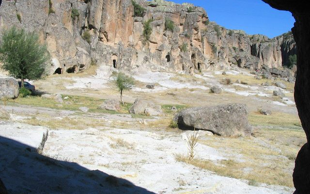
Klostertal von AksarayAksaray · Ausgrabungsstätte Museum AksarayAksaray · Museum
Museum AksarayAksaray · Museum Burg Akçakoca (Ceneviz)Düzce · Burg & historisches Bauwerk
Burg Akçakoca (Ceneviz)Düzce · Burg & historisches Bauwerk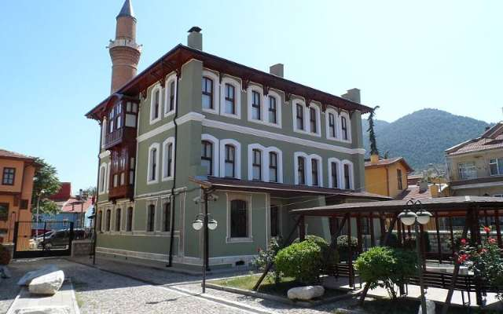
Akşehir Nasreddin Hoca Arkeoloji ve Etnografya MüzesiKonya · MuseumGrabmal AkşemsettinBolu · Sakralbau Ausgrabungsstätte AlabandaAydın · Ausgrabungsstätte
Ausgrabungsstätte AlabandaAydın · Ausgrabungsstätte Museum und Ausgrabungsstätte AlacahöyükÇorum · Ausgrabungsstätte
Museum und Ausgrabungsstätte AlacahöyükÇorum · Ausgrabungsstätte Alaeddin-MoscheeKonya · SakralbauAlaeddin Yavaşça Müze-HausKilis · Museum
Alaeddin-MoscheeKonya · SakralbauAlaeddin Yavaşça Müze-HausKilis · Museum Alagadi Kaplumbağa PlajıGirne · Naturstätte
Alagadi Kaplumbağa PlajıGirne · Naturstätte Museum Alagöz KarargâhAnkara · Museum
Museum Alagöz KarargâhAnkara · Museum Kloster AlahanMersin · SakralbauAtatürk-Haus-Museum AlanyaAntalya · Museum
Kloster AlahanMersin · SakralbauAtatürk-Haus-Museum AlanyaAntalya · Museum Burg AlanyaAntalya · Burg & historisches Bauwerk
Burg AlanyaAntalya · Burg & historisches Bauwerk Museum AlanyaAntalya · Museum
Museum AlanyaAntalya · Museum AlarahanAntalya · Burg & historisches Bauwerk
AlarahanAntalya · Burg & historisches Bauwerk Karawanserei AlayAksaray · Burg & historisches BauwerkMuseum Alaçam MübadeleSamsun · Museum
Karawanserei AlayAksaray · Burg & historisches BauwerkMuseum Alaçam MübadeleSamsun · Museum Ausgrabungsstätte AlaşehirManisa · Ausgrabungsstätte
Ausgrabungsstätte AlaşehirManisa · Ausgrabungsstätte Ausgrabungsstätte Alexandria TroasÇanakkale · AusgrabungsstätteMuseum Ali Demirsoy Doğal TarihErzincan · Museum
Ausgrabungsstätte Alexandria TroasÇanakkale · AusgrabungsstätteMuseum Ali Demirsoy Doğal TarihErzincan · Museum Ausgrabungsstätte AlindaAydın · Ausgrabungsstätte
Ausgrabungsstätte AlindaAydın · Ausgrabungsstätte Siedlungshügel AlişarYozgat · Ausgrabungsstätte
Siedlungshügel AlişarYozgat · Ausgrabungsstätte Museum Altınköy Açık HavaAnkara · Museum
Museum Altınköy Açık HavaAnkara · Museum Burg Altıntepe UrartuErzincan · Ausgrabungsstätte
Burg Altıntepe UrartuErzincan · Ausgrabungsstätte Burg AmasraBartın · Burg & historisches Bauwerk
Burg AmasraBartın · Burg & historisches Bauwerk Museum AmasraBartın · Museum
Museum AmasraBartın · Museum Museum AmasyaAmasya · Museum
Museum AmasyaAmasya · Museum Amintas Kaya MezarıMuğla · Ausgrabungsstätte
Amintas Kaya MezarıMuğla · Ausgrabungsstätte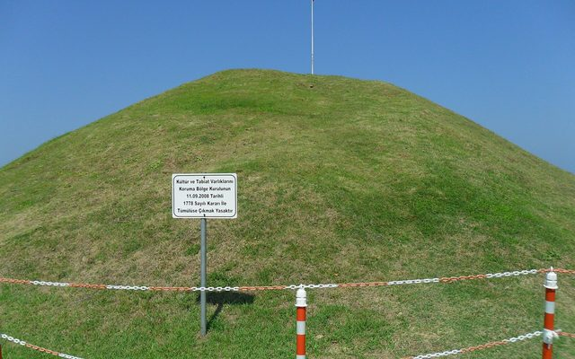
Amisos-Hügel (antikes Amisos)Samsun · Ausgrabungsstätte Antike Stadt AmoriumAfyonkarahisar · Ausgrabungsstätte
Antike Stadt AmoriumAfyonkarahisar · Ausgrabungsstätte Antike Stadt AmosMuğla · AusgrabungsstätteAntike Stadt AmyzonAydın · Ausgrabungsstätte
Antike Stadt AmosMuğla · AusgrabungsstätteAntike Stadt AmyzonAydın · Ausgrabungsstätte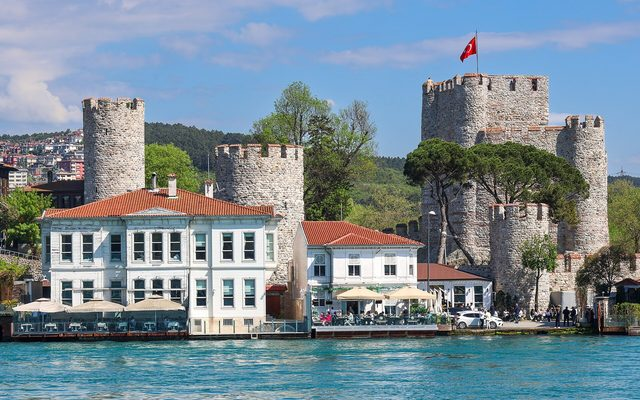
Festung Anadoluhisarıİstanbul · Burg & historisches Bauwerk Museum Anadolu MedeniyetleriAnkara · Museum
Museum Anadolu MedeniyetleriAnkara · Museum Museum Anadolu Yaşayan Köy Açık HavaAnkara · MuseumMuseum AnamurMersin · Museum
Museum Anadolu Yaşayan Köy Açık HavaAnkara · MuseumMuseum AnamurMersin · Museum Ausgrabungsstätte AnavarzaAdana · Ausgrabungsstätte
Ausgrabungsstätte AnavarzaAdana · Ausgrabungsstätte Ausgrabungsstätte AnemuriumMersin · Ausgrabungsstätte
Ausgrabungsstätte AnemuriumMersin · Ausgrabungsstätte Burg AnkaraAnkara · Burg & historisches Bauwerk
Burg AnkaraAnkara · Burg & historisches Bauwerk Museum Ankara OyuncakAnkara · Museum
Museum Ankara OyuncakAnkara · Museum Ankara Roma TiyatrosuAnkara · Ausgrabungsstätte
Ankara Roma TiyatrosuAnkara · Ausgrabungsstätte Atatürk-Haus-Museum AntalyaAntalya · Museum
Atatürk-Haus-Museum AntalyaAntalya · Museum Ethnografisches Museum AntalyaAntalya · Museum
Ethnografisches Museum AntalyaAntalya · Museum Museum AntalyaAntalya · MuseumMuseum Antalya NekropolAntalya · Museum
Museum AntalyaAntalya · MuseumMuseum Antalya NekropolAntalya · Museum Museum Antalya OyuncakAntalya · Museum
Museum Antalya OyuncakAntalya · Museum Antike Stadt Antalya SyedraAntalya · Ausgrabungsstätte
Antike Stadt Antalya SyedraAntalya · Ausgrabungsstätte Antike Stadt AntandrosBalıkesir · Ausgrabungsstätte
Antike Stadt AntandrosBalıkesir · Ausgrabungsstätte Ausgrabungsstätte AntiocheiaIsparta · Ausgrabungsstätte
Ausgrabungsstätte AntiocheiaIsparta · Ausgrabungsstätte Antike Stadt Antiokheia ad CragumAntalya · Ausgrabungsstätte
Antike Stadt Antiokheia ad CragumAntalya · Ausgrabungsstätte Antiphellos Antik Tiyatrosu (Kaş)Antalya · Ausgrabungsstätte
Antiphellos Antik Tiyatrosu (Kaş)Antalya · Ausgrabungsstätte Antiphonitis-KircheGirne · Sakralbau
Antiphonitis-KircheGirne · Sakralbau Anıtkabir (Atatürk-Mausoleum)Ankara · Museum
Anıtkabir (Atatürk-Mausoleum)Ankara · Museum Antike Stadt AperlaiAntalya · Ausgrabungsstätte
Antike Stadt AperlaiAntalya · Ausgrabungsstätte Ausgrabungsstätte Apollon SmintheionÇanakkale · Ausgrabungsstätte
Ausgrabungsstätte Apollon SmintheionÇanakkale · Ausgrabungsstätte Antike Stadt Apollonia (Likya)Antalya · Ausgrabungsstätte
Antike Stadt Apollonia (Likya)Antalya · Ausgrabungsstätte Kloster Apostolos Andreasİskele · Sakralbau
Kloster Apostolos Andreasİskele · Sakralbau Museum Ara Gülerİstanbul · Museum
Museum Ara Gülerİstanbul · Museum Antike Stadt AriassosAntalya · Ausgrabungsstätte
Antike Stadt AriassosAntalya · Ausgrabungsstätte Arkas Sanat Merkeziİzmir · MuseumAntike Stadt ArneaiAntalya · Ausgrabungsstätte
Arkas Sanat Merkeziİzmir · MuseumAntike Stadt ArneaiAntalya · Ausgrabungsstätte Antike Stadt ArsadaMuğla · Ausgrabungsstätte
Antike Stadt ArsadaMuğla · Ausgrabungsstätte Ausgrabungsstätte ArsemeiaAdıyaman · Ausgrabungsstätte
Ausgrabungsstätte ArsemeiaAdıyaman · Ausgrabungsstätte Arterİstanbul · Museum
Arterİstanbul · Museum Ausgrabungsstätte ArykandaAntalya · Ausgrabungsstätte
Ausgrabungsstätte ArykandaAntalya · Ausgrabungsstätte Külliye Ashab-ı KehfKahramanmaraş · Sakralbau
Külliye Ashab-ı KehfKahramanmaraş · Sakralbau Askeri Müzeİstanbul · Museum
Askeri Müzeİstanbul · Museum AspendosAntalya · Ausgrabungsstätte
AspendosAntalya · Ausgrabungsstätte Ausgrabungsstätte AssosÇanakkale · AusgrabungsstätteAtatürk Evi MüzesiDiyarbakır · Museum
Ausgrabungsstätte AssosÇanakkale · AusgrabungsstätteAtatürk Evi MüzesiDiyarbakır · Museum Atatürk Konutu ve Demiryolları MüzesiAnkara · Museum
Atatürk Konutu ve Demiryolları MüzesiAnkara · Museum Atatürk Müzesi (Şişli)İstanbul · MuseumAtatürk ve Etnografya MüzesiUşak · Museum
Atatürk Müzesi (Şişli)İstanbul · MuseumAtatürk ve Etnografya MüzesiUşak · Museum Atatürk-, Redif- und EthnografiemuseumKocaeli · Museum
Atatürk-, Redif- und EthnografiemuseumKocaeli · Museum Museum Atlas 1948 İstanbul Sinemaİstanbul · Museum
Museum Atlas 1948 İstanbul Sinemaİstanbul · Museum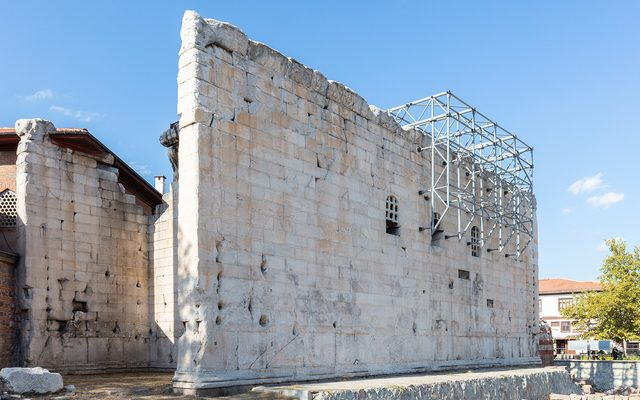
Tempel des AugustusAnkara · Ausgrabungsstätte Jagdpavillon-Palastmuseum in İzmitKocaeli · Museum
Jagdpavillon-Palastmuseum in İzmitKocaeli · Museum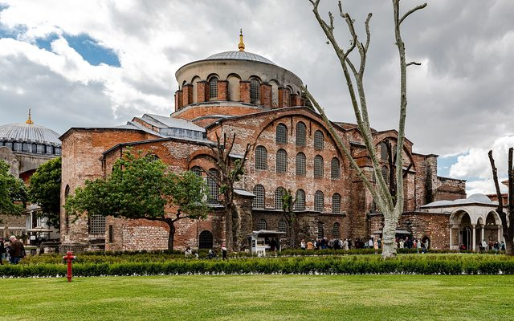
Denkmalmuseum Hagia Ireneİstanbul · Sakralbau Burg AyanisVan · Ausgrabungsstätte
Burg AyanisVan · Ausgrabungsstätte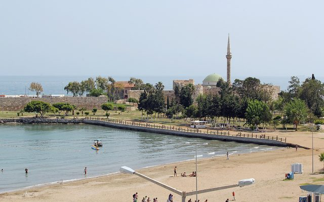
Burg Ayas (Yumurtalık)Adana · Burg & historisches Bauwerk Hagia-Sophia-Geschichts- und Erlebnismuseumİstanbul · Museum
Hagia-Sophia-Geschichts- und Erlebnismuseumİstanbul · Museum Große Moschee Hagia Sophiaİstanbul · Sakralbau
Große Moschee Hagia Sophiaİstanbul · Sakralbau Ausgrabungsstätte Ayasuluk - St.Jeanİzmir · Ausgrabungsstätte
Ausgrabungsstätte Ayasuluk - St.Jeanİzmir · Ausgrabungsstätte Burg Ayasulukİzmir · Burg & historisches Bauwerk
Burg Ayasulukİzmir · Burg & historisches Bauwerk Archäologisches Museum AydınAydın · MuseumAyia Trias Bazilikasıİskele · Sakralbau
Archäologisches Museum AydınAydın · MuseumAyia Trias Bazilikasıİskele · Sakralbau Aynalıkavak-Pavillonİstanbul · Burg & historisches Bauwerk
Aynalıkavak-Pavillonİstanbul · Burg & historisches Bauwerk Denkmalmuseum Aziz (St.) NikolaosAntalya · MuseumUnterirdische Stadt Aziz MercuriusAksaray · Unterirdische StadtAziz Pavlus-WegAntalya · Wanderweg
Denkmalmuseum Aziz (St.) NikolaosAntalya · MuseumUnterirdische Stadt Aziz MercuriusAksaray · Unterirdische StadtAziz Pavlus-WegAntalya · Wanderweg Tell Atchana (Alalach)Hatay · Ausgrabungsstätte
Tell Atchana (Alalach)Hatay · Ausgrabungsstätte Karawanserei AğzıkaraAksaray · Burg & historisches Bauwerk
Karawanserei AğzıkaraAksaray · Burg & historisches Bauwerk Museum Aşık VeyselSivas · Museum
Museum Aşık VeyselSivas · Museum Siedlungshügel AşıklıAksaray · Ausgrabungsstätte
Siedlungshügel AşıklıAksaray · Ausgrabungsstätte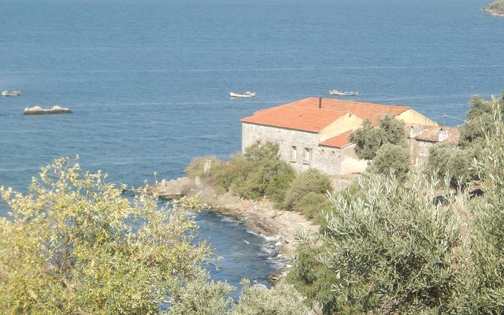
Naturpark Bafa-SeeMuğla · See Museum BafraSamsun · Museum
Museum BafraSamsun · Museum Burg BakrasHatay · Burg & historisches BauwerkAntike Stadt BalburaBurdur · Ausgrabungsstätte
Burg BakrasHatay · Burg & historisches BauwerkAntike Stadt BalburaBurdur · Ausgrabungsstätte Museum Balıkesir Kuvâ-yı MilliyeBalıkesir · Museum
Museum Balıkesir Kuvâ-yı MilliyeBalıkesir · Museum Balıklıgöl ve Halil-ür Rahman CamiiŞanlıurfa · Sakralbau
Balıklıgöl ve Halil-ür Rahman CamiiŞanlıurfa · Sakralbau Museum BandırmaBalıkesir · Museum
Museum BandırmaBalıkesir · Museum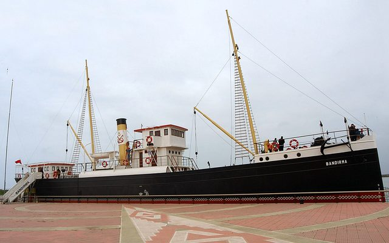
Museum Bandırma Vapuru GemiSamsun · Museum Museum BarbarlıkLefkoşa · Museum
Museum BarbarlıkLefkoşa · Museum Antike Stadt BargyliaMuğla · Ausgrabungsstätte
Antike Stadt BargyliaMuğla · Ausgrabungsstätte Museum BatmanBatman · Museum
Museum BatmanBatman · Museum Museum Batı Cephesi KarargahıKonya · Museum
Museum Batı Cephesi KarargahıKonya · Museum Museum Bayburt BaksıBayburt · MuseumBeldibi-HöhleAntalya · Ausgrabungsstätte
Museum Bayburt BaksıBayburt · MuseumBeldibi-HöhleAntalya · Ausgrabungsstätte Kloster BellapaisGirne · Sakralbau
Kloster BellapaisGirne · Sakralbau Museum Bergamaİzmir · Museum
Museum Bergamaİzmir · Museum Museum Beyazıt Hamam Kültürüİstanbul · Museum
Museum Beyazıt Hamam Kültürüİstanbul · Museum Siedlungshügel BeycesultanDenizli · Ausgrabungsstätte
Siedlungshügel BeycesultanDenizli · Ausgrabungsstätte Beykoz Cam ve Billur Müzesiİstanbul · Museum
Beykoz Cam ve Billur Müzesiİstanbul · Museum Beylerbeyi-Palastİstanbul · Burg & historisches Bauwerk
Beylerbeyi-Palastİstanbul · Burg & historisches Bauwerk Beypazarı Yaşayan MüzeAnkara · Museum
Beypazarı Yaşayan MüzeAnkara · Museum Nationalpark Beyşehir-SeeKonya · SeeBeşkonaklar Etnografya Müzesi ve Geleneksel Malatya EviMalatya · Museum
Nationalpark Beyşehir-SeeKonya · SeeBeşkonaklar Etnografya Müzesi ve Geleneksel Malatya EviMalatya · Museum Beşparmak DağlarıGirne · NaturstätteMuseum BilecikBilecik · Museum
Beşparmak DağlarıGirne · NaturstätteMuseum BilecikBilecik · Museum Bin Tepe Lidya TümülüsleriManisa · Ausgrabungsstätte
Bin Tepe Lidya TümülüsleriManisa · Ausgrabungsstätte Binbir KiliseKaraman · Ausgrabungsstätte
Binbir KiliseKaraman · Ausgrabungsstätte Binbirdirek-Zisterneİstanbul · Burg & historisches Bauwerk
Binbirdirek-Zisterneİstanbul · Burg & historisches Bauwerk Schwimmende Inseln von BingölBingöl · See
Schwimmende Inseln von BingölBingöl · See Çakırağa-Konak in Birgiİzmir · MuseumEthnografisches Museum BitlisBitlis · Museum
Çakırağa-Konak in Birgiİzmir · MuseumEthnografisches Museum BitlisBitlis · Museum Burg BitlisBitlis · Burg & historisches Bauwerk
Burg BitlisBitlis · Burg & historisches Bauwerk Ausgrabungsstätte BlaundosUşak · Ausgrabungsstätte
Ausgrabungsstätte BlaundosUşak · Ausgrabungsstätte Antikes Theater BodrumMuğla · Ausgrabungsstätte
Antikes Theater BodrumMuğla · Ausgrabungsstätte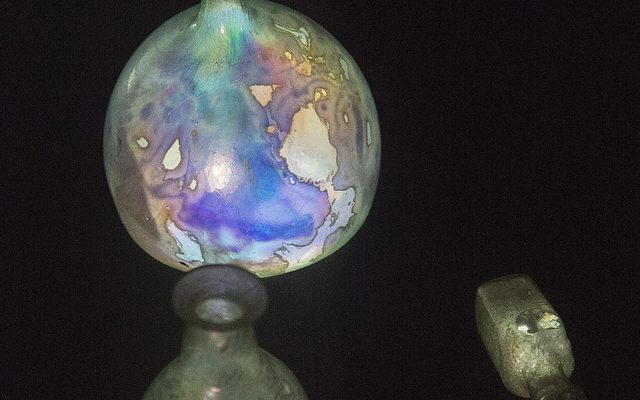
Bodrum Serçe Limanı Cam Batığı Sergi SalonuMuğla · Museum Archäologisches Museum Bodrum SualtıMuğla · Museum
Archäologisches Museum Bodrum SualtıMuğla · Museum Burg Bolaman und Hazinedaroğlu-KonakOrdu · Burg & historisches Bauwerk
Burg Bolaman und Hazinedaroğlu-KonakOrdu · Burg & historisches Bauwerk Museum BoluBolu · Museum
Museum BoluBolu · Museum Siedlungshügel BoncukluKonya · Ausgrabungsstätte
Siedlungshügel BoncukluKonya · Ausgrabungsstätte Archäologisches Museum Bostanlı Açık Havaİzmir · Museum
Archäologisches Museum Bostanlı Açık Havaİzmir · Museum Bozdoğan Kemeriİstanbul · Burg & historisches BauwerkMuseum Boğatepe PeynirKars · Museum
Bozdoğan Kemeriİstanbul · Burg & historisches BauwerkMuseum Boğatepe PeynirKars · Museum Museum BoğazköyÇorum · Museum
Museum BoğazköyÇorum · Museum Burg BuffaventoGirne · Burg & historisches Bauwerk
Burg BuffaventoGirne · Burg & historisches Bauwerk Bulgar Sveti Stefan (Demir)-Kircheİstanbul · Sakralbau
Bulgar Sveti Stefan (Demir)-Kircheİstanbul · Sakralbau Museum BurdurBurdur · Museum
Museum BurdurBurdur · Museum Archäologisches Museum BursaBursa · Museum
Archäologisches Museum BursaBursa · Museum Atatürk-Haus-Museum BursaBursa · Museum
Atatürk-Haus-Museum BursaBursa · Museum Stadtmuseum BursaBursa · Museum
Stadtmuseum BursaBursa · Museum Museum Bursa Türk İslam EserleriBursa · Museum
Museum Bursa Türk İslam EserleriBursa · Museum Bursa Ulu-MoscheeBursa · Sakralbau
Bursa Ulu-MoscheeBursa · Sakralbau Grüne Moschee und Grünes Mausoleum, BursaBursa · Sakralbau
Grüne Moschee und Grünes Mausoleum, BursaBursa · Sakralbau Bursa İznik Göl BazilikasıBursa · Sakralbau
Bursa İznik Göl BazilikasıBursa · Sakralbau Büyük-Ağa-MedreseAmasya · Sakralbau
Büyük-Ağa-MedreseAmasya · Sakralbau Büyük Han (Große Karawanserei)Lefkoşa · Burg & historisches Bauwerk
Büyük Han (Große Karawanserei)Lefkoşa · Burg & historisches Bauwerk Mosaikmuseum des Großen Palastesİstanbul · Museum
Mosaikmuseum des Großen Palastesİstanbul · Museum Medrese CacabeyKırşehir · Sakralbau
Medrese CacabeyKırşehir · Sakralbau Cahit Sıtkı Tarancı Evi Etnografya MüzesiDiyarbakır · Museum
Cahit Sıtkı Tarancı Evi Etnografya MüzesiDiyarbakır · Museum Cehennemağzı MağaralarıZonguldak · Naturstätte
Cehennemağzı MağaralarıZonguldak · Naturstätte Cendere-BrückeAdıyaman · Burg & historisches Bauwerk
Cendere-BrückeAdıyaman · Burg & historisches Bauwerk Museum Cendere Sanatİstanbul · Museum
Museum Cendere Sanatİstanbul · Museum CerModernAnkara · Museum
CerModernAnkara · Museum Karawanserei CinciKarabük · Burg & historisches Bauwerk
Karawanserei CinciKarabük · Burg & historisches Bauwerk Rote Medrese von CizreŞırnak · Burg & historisches Bauwerk
Rote Medrese von CizreŞırnak · Burg & historisches Bauwerk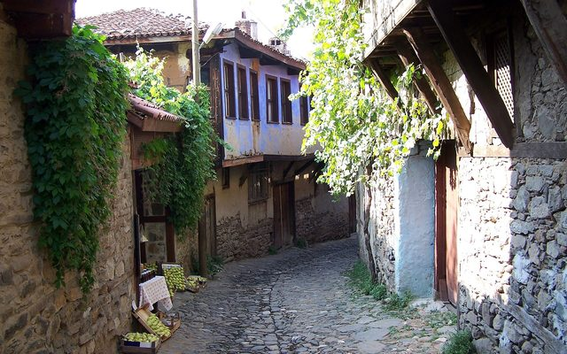
Cumalıkızık KöyüBursa · Burg & historisches Bauwerk Museum CumhuriyetAnkara · Museum
Museum CumhuriyetAnkara · Museum Dalaman ÇayıMuğla · Rafting
Dalaman ÇayıMuğla · Rafting Ausgrabungsstätte DaraMardin · Ausgrabungsstätte
Ausgrabungsstätte DaraMardin · Ausgrabungsstätte Antike Stadt DaskyleionBalıkesir · AusgrabungsstätteDavraz Kayak MerkeziIsparta · SkigebietEisengießerei DemirköyKırklareli · Ausgrabungsstätte
Antike Stadt DaskyleionBalıkesir · AusgrabungsstätteDavraz Kayak MerkeziIsparta · SkigebietEisengießerei DemirköyKırklareli · Ausgrabungsstätte Atatürk- und Ethnografiemuseum DenizliDenizli · Museum
Atatürk- und Ethnografiemuseum DenizliDenizli · Museum Stadtmuseum DenizliDenizli · Museum
Stadtmuseum DenizliDenizli · Museum Ausgrabungsstätte Denizli TripolisDenizli · AusgrabungsstätteSiedlungshügel DerbeKaraman · Ausgrabungsstätte
Ausgrabungsstätte Denizli TripolisDenizli · AusgrabungsstätteSiedlungshügel DerbeKaraman · Ausgrabungsstätte Derviş-Paşa-KonakLefkoşa · Museum
Derviş-Paşa-KonakLefkoşa · Museum Staatsfriedhof AnkaraAnkara · Burg & historisches Bauwerk
Staatsfriedhof AnkaraAnkara · Burg & historisches Bauwerk Museum Devrim ArabalarıEskişehir · Museum
Museum Devrim ArabalarıEskişehir · Museum Kloster DeyrulzafaranMardin · Sakralbau
Kloster DeyrulzafaranMardin · Sakralbau Dicle Tüneli (Birkleyn Mağaraları)Diyarbakır · Ausgrabungsstätte
Dicle Tüneli (Birkleyn Mağaraları)Diyarbakır · Ausgrabungsstätte Tempel des Didim ApollonAydın · Ausgrabungsstätte
Tempel des Didim ApollonAydın · Ausgrabungsstätte Große Moschee und Hospital von DivriğiSivas · Sakralbau
Große Moschee und Hospital von DivriğiSivas · Sakralbau Archäologisches Museum DiyarbakırDiyarbakır · Museum
Archäologisches Museum DiyarbakırDiyarbakır · Museum Diyarbakır SurlarıDiyarbakır · Burg & historisches Bauwerk
Diyarbakır SurlarıDiyarbakır · Burg & historisches Bauwerk Diyarbakır Ulu-MoscheeDiyarbakır · Sakralbau
Diyarbakır Ulu-MoscheeDiyarbakır · Sakralbau Dolmabahçe-Palastİstanbul · Burg & historisches BauwerkMuseum Doğa TarihiBurdur · Museum
Dolmabahçe-Palastİstanbul · Burg & historisches BauwerkMuseum Doğa TarihiBurdur · Museum Dupnisa-HöhleKırklareli · Naturstätte
Dupnisa-HöhleKırklareli · Naturstätte Düden ŞelaleleriAntalya · WasserfallAntike Stadt Dülük (Doliche)Gaziantep · Ausgrabungsstätte
Düden ŞelaleleriAntalya · WasserfallAntike Stadt Dülük (Doliche)Gaziantep · Ausgrabungsstätte Große Synagoge von EdirneEdirne · SakralbauMuseum Edirne Hıdırlık Tabya Balkan TarihiEdirne · Museum
Große Synagoge von EdirneEdirne · SakralbauMuseum Edirne Hıdırlık Tabya Balkan TarihiEdirne · Museum Edirne Makedonya-TurmEdirne · Burg & historisches Bauwerk
Edirne Makedonya-TurmEdirne · Burg & historisches Bauwerk Museum EdirneEdirne · Museum
Museum EdirneEdirne · Museum Ruinen des Palastes von Edirne (Saray-ı Cedid)Edirne · Ausgrabungsstätte
Ruinen des Palastes von Edirne (Saray-ı Cedid)Edirne · Ausgrabungsstätte Edirne Selimiye-MoscheeEdirne · SakralbauMuseum Efes Deneyimİzmir · Museum
Edirne Selimiye-MoscheeEdirne · SakralbauMuseum Efes Deneyimİzmir · Museum Museum Ephesosİzmir · Museum
Museum Ephesosİzmir · Museum Efes Örenyeri-Yamaçevlerİzmir · Ausgrabungsstätte
Efes Örenyeri-Yamaçevlerİzmir · Ausgrabungsstätte Hethitisches Quellheiligtum EflatunpınarKonya · AusgrabungsstätteNaturkundemuseum der Ege-Universitätİzmir · Museum
Hethitisches Quellheiligtum EflatunpınarKonya · AusgrabungsstätteNaturkundemuseum der Ege-Universitätİzmir · Museum Antike Stadt Elaiussa SebasteMersin · AusgrabungsstätteMuseum ElazığElâzığ · MuseumMuseum Elbistan ŞehirKahramanmaraş · Museum
Antike Stadt Elaiussa SebasteMersin · AusgrabungsstätteMuseum ElazığElâzığ · MuseumMuseum Elbistan ŞehirKahramanmaraş · Museum Museum Elgiz Çağdaş Sanatİstanbul · MuseumMuseum ElmalıAntalya · MuseumMuseum Emine Göğüş MutfakGaziantep · Museum
Museum Elgiz Çağdaş Sanatİstanbul · MuseumMuseum ElmalıAntalya · MuseumMuseum Emine Göğüş MutfakGaziantep · Museum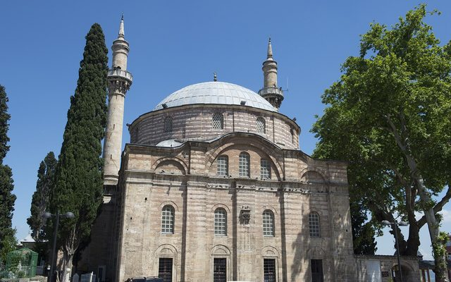
Emir Sultan-MoscheeBursa · Sakralbau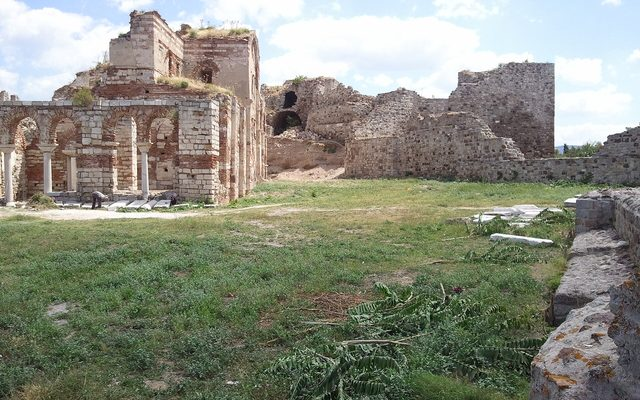
Burg Enez (Ainos)Edirne · Burg & historisches Bauwerk Ausgrabungsstätte Enkomi (Alasya)Gazimağusa · Ausgrabungsstätte
Ausgrabungsstätte Enkomi (Alasya)Gazimağusa · Ausgrabungsstätte Erciyes Kayak MerkeziKayseri · SkigebietMuseum EreğliKonya · Museum
Erciyes Kayak MerkeziKayseri · SkigebietMuseum EreğliKonya · Museum Erfelek Tatlıca ŞelaleleriSinop · Wasserfall
Erfelek Tatlıca ŞelaleleriSinop · Wasserfall Erimtan Arkeoloji ve Sanat MüzesiAnkara · MuseumErmenek Ahmet Keleşoğlu Arkeoloji ve Etnografya MüzesiKaraman · Museum
Erimtan Arkeoloji ve Sanat MüzesiAnkara · MuseumErmenek Ahmet Keleşoğlu Arkeoloji ve Etnografya MüzesiKaraman · Museum Antike Stadt Erythraiİzmir · Ausgrabungsstätte
Antike Stadt Erythraiİzmir · Ausgrabungsstätte Museum ErzincanErzincan · Museum
Museum ErzincanErzincan · Museum Atatürk-Haus-Museum ErzurumErzurum · Museum
Atatürk-Haus-Museum ErzurumErzurum · Museum Burg ErzurumErzurum · Burg & historisches Bauwerk
Burg ErzurumErzurum · Burg & historisches Bauwerk Museum ErzurumErzurum · MuseumMuseum Erzurum Resim HeykelErzurum · Museum
Museum ErzurumErzurum · MuseumMuseum Erzurum Resim HeykelErzurum · Museum Eski Smyrna (Bayraklı Höyüğü)İzmir · Ausgrabungsstätte
Eski Smyrna (Bayraklı Höyüğü)İzmir · Ausgrabungsstätte Museum Eskişehir KurtuluşEskişehir · MuseumAntike Stadt EtennaAntalya · Ausgrabungsstätte
Museum Eskişehir KurtuluşEskişehir · MuseumAntike Stadt EtennaAntalya · Ausgrabungsstätte Archäologisches Museum EtiEskişehir · Museum
Archäologisches Museum EtiEskişehir · Museum Museum EtnografyaAnkara · Museum
Museum EtnografyaAnkara · Museum Evliya Çelebi-WegKütahya · Wanderweg
Evliya Çelebi-WegKütahya · Wanderweg Eyüp Sultan-Moscheeİstanbul · Sakralbau
Eyüp Sultan-Moscheeİstanbul · Sakralbau Burg Eğil und ProphetengräberDiyarbakır · Burg & historisches Bauwerk
Burg Eğil und ProphetengräberDiyarbakır · Burg & historisches Bauwerk Eğirdir-SeeIsparta · See
Eğirdir-SeeIsparta · See Museum Eğitim KarikatürleriEskişehir · Museum
Museum Eğitim KarikatürleriEskişehir · Museum Hethitisches Monument FasıllarKonya · Ausgrabungsstätte
Hethitisches Monument FasıllarKonya · Ausgrabungsstätte Fener Rum Patrikhanesi ve Aya Yorgi Kilisesiİstanbul · Sakralbau
Fener Rum Patrikhanesi ve Aya Yorgi Kilisesiİstanbul · Sakralbau Museum Fenerbahçeİstanbul · Museum
Museum Fenerbahçeİstanbul · Museum Fethiye Gemile AdasıMuğla · Ausgrabungsstätte
Fethiye Gemile AdasıMuğla · Ausgrabungsstätte Ausgrabungsstätte Fethiye KayaköyMuğla · Ausgrabungsstätte
Ausgrabungsstätte Fethiye KayaköyMuğla · Ausgrabungsstätte Ausgrabungsstätte Fethiye LetoonMuğla · Ausgrabungsstätte
Ausgrabungsstätte Fethiye LetoonMuğla · Ausgrabungsstätte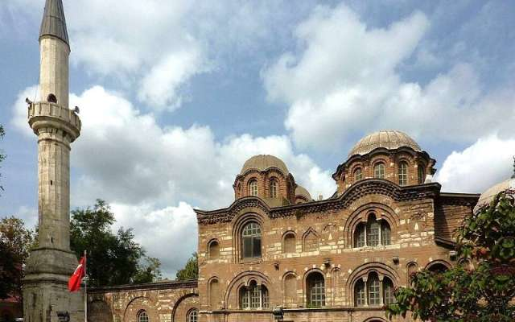
Museum Fethiyeİstanbul · Museum Museum FethiyeMuğla · Museum
Museum FethiyeMuğla · Museum Ausgrabungsstätte Fethiye PınaraMuğla · Ausgrabungsstätte
Ausgrabungsstätte Fethiye PınaraMuğla · Ausgrabungsstätte Ausgrabungsstätte Fethiye TlosMuğla · AusgrabungsstätteFildamı-Zisterneİstanbul · Burg & historisches Bauwerk
Ausgrabungsstätte Fethiye TlosMuğla · AusgrabungsstätteFildamı-Zisterneİstanbul · Burg & historisches Bauwerk Ausgrabungsstätte Filyos(Tios)Zonguldak · Ausgrabungsstätte
Ausgrabungsstätte Filyos(Tios)Zonguldak · Ausgrabungsstätte Florya Atatürk Deniz-Pavillonİstanbul · Museum
Florya Atatürk Deniz-Pavillonİstanbul · Museum Frig-WegEskişehir · Wanderweg
Frig-WegEskişehir · Wanderweg Fırtına DeresiRize · RaftingAntike Stadt GagaeAntalya · Ausgrabungsstätte
Fırtına DeresiRize · RaftingAntike Stadt GagaeAntalya · Ausgrabungsstätte Museum Galata Mevlevihanesiİstanbul · Museum
Museum Galata Mevlevihanesiİstanbul · Museum Gazi-PavillonDiyarbakır · Burg & historisches Bauwerk
Gazi-PavillonDiyarbakır · Burg & historisches Bauwerk Museum GaziSamsun · Museum
Museum GaziSamsun · Museum Archäologisches Museum GaziantepGaziantep · Museum
Archäologisches Museum GaziantepGaziantep · Museum Burg GaziantepGaziantep · Burg & historisches Bauwerk
Burg GaziantepGaziantep · Burg & historisches Bauwerk Gaziantep Savunması ve Kahramanlık Panorama MüzesiGaziantep · Museum
Gaziantep Savunması ve Kahramanlık Panorama MüzesiGaziantep · Museum Museum Gelibolu SavaşÇanakkale · Museum
Museum Gelibolu SavaşÇanakkale · Museum Gelibolu Tarihi Alanı (Çanakkale Savaşları)Çanakkale · Ausgrabungsstätte
Gelibolu Tarihi Alanı (Çanakkale Savaşları)Çanakkale · Ausgrabungsstätte Antike Stadt GergaAydın · AusgrabungsstätteGermanicia Mozaikli AlanKahramanmaraş · Ausgrabungsstätte
Antike Stadt GergaAydın · AusgrabungsstätteGermanicia Mozaikli AlanKahramanmaraş · Ausgrabungsstätte Burg GiresunGiresun · Burg & historisches Bauwerk
Burg GiresunGiresun · Burg & historisches Bauwerk Museum GiresunGiresun · Museum
Museum GiresunGiresun · Museum Girlevik-WasserfallErzincan · Wasserfall
Girlevik-WasserfallErzincan · Wasserfall Girne Dağ Yürüyüş-WegGirne · Wanderweg
Girne Dağ Yürüyüş-WegGirne · Wanderweg Burg Kyrenia und SchiffswrackmuseumGirne · Burg & historisches Bauwerk
Burg Kyrenia und SchiffswrackmuseumGirne · Burg & historisches Bauwerk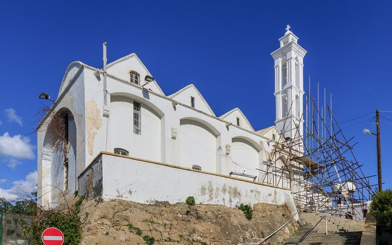
Museum Girne İkonGirne · Museum Ausgrabungsstätte GökkaleMersin · Ausgrabungsstätte
Ausgrabungsstätte GökkaleMersin · Ausgrabungsstätte Museum Gökyay Vakfı SatrançAnkara · Museum
Museum Gökyay Vakfı SatrançAnkara · Museum Naturpark Kratersee GölcükIsparta · See
Naturpark Kratersee GölcükIsparta · See Gölyazı (Apollonia ad Rhyndacum)Bursa · Ausgrabungsstätte
Gölyazı (Apollonia ad Rhyndacum)Bursa · Ausgrabungsstätte Göynük-SchluchtAntalya · Schlucht
Göynük-SchluchtAntalya · Schlucht Burg GözneMersin · Burg & historisches Bauwerk
Burg GözneMersin · Burg & historisches Bauwerk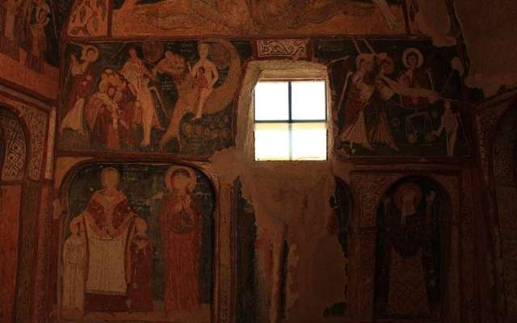
Gülşehir-St.Jean-KircheNevşehir · SakralbauMuseum GümüşhaneGümüşhane · Museum Gümüşkesen Anıt MezarıMuğla · Ausgrabungsstätte
Gümüşkesen Anıt MezarıMuğla · Ausgrabungsstätte Kloster und unterirdische Stadt GümüşlerNiğde · Unterirdische Stadt
Kloster und unterirdische Stadt GümüşlerNiğde · Unterirdische Stadt Ethnografisches Museum im Güpgüpoğlu-KonakKayseri · Museum
Ethnografisches Museum im Güpgüpoğlu-KonakKayseri · Museum Güzelyurt Arkeoloji ve Doğa Tarihi MüzesiGüzelyurt · Museum
Güzelyurt Arkeoloji ve Doğa Tarihi MüzesiGüzelyurt · Museum Güzelyurt Manastır-TalAksaray · Sakralbau
Güzelyurt Manastır-TalAksaray · Sakralbau Kloster GıdutsVan · Sakralbau
Kloster GıdutsVan · Sakralbau Habib-i Neccar-MoscheeHatay · Sakralbau
Habib-i Neccar-MoscheeHatay · Sakralbau Hacı Bayram Veli-MoscheeAnkara · Sakralbau
Hacı Bayram Veli-MoscheeAnkara · Sakralbau Museum HacıbektaşNevşehir · Museum
Museum HacıbektaşNevşehir · Museum Siedlungshügel HacılarBurdur · Ausgrabungsstätte
Siedlungshügel HacılarBurdur · Ausgrabungsstätte Hadrian KapısıAntalya · Burg & historisches Bauwerk
Hadrian KapısıAntalya · Burg & historisches Bauwerk Ausgrabungsstätte HadrianopolisKarabük · Ausgrabungsstätte
Ausgrabungsstätte HadrianopolisKarabük · Ausgrabungsstätte Museum Hafıza 15 Temmuzİstanbul · MuseumMeydan-Medrese in HakkariHakkari · Burg & historisches Bauwerk
Museum Hafıza 15 Temmuzİstanbul · MuseumMeydan-Medrese in HakkariHakkari · Burg & historisches Bauwerk Mosaikmuseum HaleplibahçeŞanlıurfa · MuseumHamidiye Tabyası ve Çanakkale Savaşları Tarihi MüzesiÇanakkale · Museum
Mosaikmuseum HaleplibahçeŞanlıurfa · MuseumHamidiye Tabyası ve Çanakkale Savaşları Tarihi MüzesiÇanakkale · Museum Karawanserei Han el Ba'rurŞanlıurfa · Burg & historisches BauwerkHarbiye ŞelaleleriHatay · Wasserfall
Karawanserei Han el Ba'rurŞanlıurfa · Burg & historisches BauwerkHarbiye ŞelaleleriHatay · Wasserfall Burg HarputElâzığ · Burg & historisches Bauwerk
Burg HarputElâzığ · Burg & historisches Bauwerk Ausgrabungsstätte HarranŞanlıurfa · Ausgrabungsstätte
Ausgrabungsstätte HarranŞanlıurfa · Ausgrabungsstätte Burg HarşenaAmasya · Burg & historisches Bauwerk
Burg HarşenaAmasya · Burg & historisches Bauwerk Karawanserei Hasan PaşaDiyarbakır · Burg & historisches Bauwerk
Karawanserei Hasan PaşaDiyarbakır · Burg & historisches Bauwerk Ethnografisches Museum Hasan SüzerGaziantep · Museum
Ethnografisches Museum Hasan SüzerGaziantep · Museum Museum und Ausgrabungsstätte HasankeyfBatman · Ausgrabungsstätte
Museum und Ausgrabungsstätte HasankeyfBatman · Ausgrabungsstätte Archäologisches Museum HatayHatay · MuseumArchäologisches Museum Hatay Necmi AsfuroğluHatay · Museum
Archäologisches Museum HatayHatay · MuseumArchäologisches Museum Hatay Necmi AsfuroğluHatay · Museum Museum Hava KuvvetleriAnkara · Museum
Museum Hava KuvvetleriAnkara · Museum Havariler (Kümbet)-MoscheeKars · SakralbauAtatürk-Haus-Museum HavzaSamsun · Museum
Havariler (Kümbet)-MoscheeKars · SakralbauAtatürk-Haus-Museum HavzaSamsun · Museum Hazar-SeeElâzığ · See
Hazar-SeeElâzığ · See Hazeranlar-KonakAmasya · Museum
Hazeranlar-KonakAmasya · Museum Helles Anıtı (Seddülbahir)Çanakkale · Ausgrabungsstätte
Helles Anıtı (Seddülbahir)Çanakkale · Ausgrabungsstätte Antike Stadt Herakleia (Latmos)Muğla · Ausgrabungsstätte
Antike Stadt Herakleia (Latmos)Muğla · Ausgrabungsstätte Antike Stadt Herakleia SalbakeDenizli · Ausgrabungsstätte
Antike Stadt Herakleia SalbakeDenizli · Ausgrabungsstätte Archäologisches Museum Hierapolis (Pamukkale)Denizli · MuseumMuseum Hilmi Nakipoğlu Fotoğraf Makineleriİstanbul · MuseumHisart Canlı Tarih ve Diorama Müzesiİstanbul · Museum
Archäologisches Museum Hierapolis (Pamukkale)Denizli · MuseumMuseum Hilmi Nakipoğlu Fotoğraf Makineleriİstanbul · MuseumHisart Canlı Tarih ve Diorama Müzesiİstanbul · Museum Hitit-WegÇorum · Wanderweg
Hitit-WegÇorum · Wanderweg Horma-SchluchtKastamonu · Schlucht
Horma-SchluchtKastamonu · Schlucht Burg HoşapVan · Burg & historisches BauwerkAntike Stadt HyllarimaMuğla · Ausgrabungsstätte
Burg HoşapVan · Burg & historisches BauwerkAntike Stadt HyllarimaMuğla · Ausgrabungsstätte Ausgrabungsstätte IassosMuğla · Ausgrabungsstätte
Ausgrabungsstätte IassosMuğla · Ausgrabungsstätte Antike Stadt IdebessosAntalya · Ausgrabungsstätte
Antike Stadt IdebessosAntalya · Ausgrabungsstätte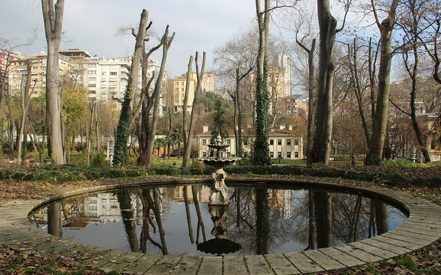
Ihlamur-Pavillonİstanbul · Burg & historisches Bauwerk Ihlara-TalAksaray · Ausgrabungsstätte
Ihlara-TalAksaray · Ausgrabungsstätte Ilgaz Kayak MerkeziKastamonu · Skigebiet
Ilgaz Kayak MerkeziKastamonu · Skigebiet Antike Stadt IotapeAntalya · Ausgrabungsstätte
Antike Stadt IotapeAntalya · Ausgrabungsstätte Irgandı-BrückeBursa · Burg & historisches BauwerkAntike Stadt IsindaAntalya · Ausgrabungsstätte
Irgandı-BrückeBursa · Burg & historisches BauwerkAntike Stadt IsindaAntalya · Ausgrabungsstätte Museum IspartaIsparta · Museum
Museum IspartaIsparta · Museum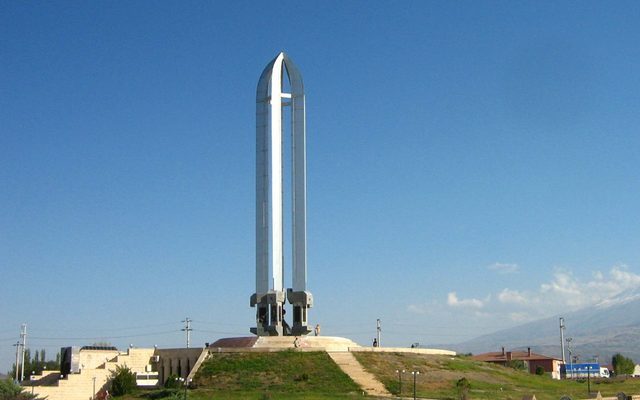
Iğdır Soykırım Anıtı ve MüzesiIğdır · MuseumMuseum JandarmaAnkara · Museum Juliopolis NekropolüAnkara · Ausgrabungsstätte
Juliopolis NekropolüAnkara · Ausgrabungsstätte Justinianus (Beşköprü)-BrückeSakarya · Burg & historisches Bauwerk
Justinianus (Beşköprü)-BrückeSakarya · Burg & historisches Bauwerk Kabatepe Tanıtım MerkeziÇanakkale · Museum
Kabatepe Tanıtım MerkeziÇanakkale · Museum Kadifekaleİzmir · Burg & historisches Bauwerk
Kadifekaleİzmir · Burg & historisches Bauwerk Antike Stadt KadyandaMuğla · AusgrabungsstätteAusgrabungsstätte KadıkalesiAydın · AusgrabungsstätteKahramankazan 15 Temmuz Şehitleri ve Demokrasi MüzesiAnkara · Museum
Antike Stadt KadyandaMuğla · AusgrabungsstätteAusgrabungsstätte KadıkalesiAydın · AusgrabungsstätteKahramankazan 15 Temmuz Şehitleri ve Demokrasi MüzesiAnkara · Museum Museum KahramanmaraşKahramanmaraş · Museum
Museum KahramanmaraşKahramanmaraş · Museum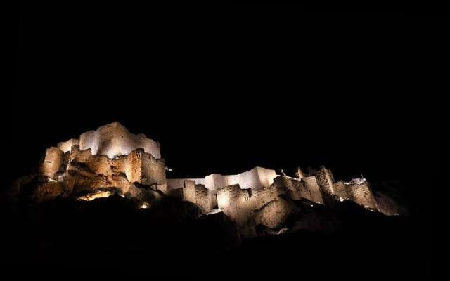
Ausgrabungsstätte Kahta YenikaleAdıyaman · Ausgrabungsstätte Archäologisches Museum Kaman KalehöyükKırşehir · AusgrabungsstätteMuseum Kandilli Depremİstanbul · MuseumAntike Stadt KandybaAntalya · Ausgrabungsstätte
Archäologisches Museum Kaman KalehöyükKırşehir · AusgrabungsstätteMuseum Kandilli Depremİstanbul · MuseumAntike Stadt KandybaAntalya · Ausgrabungsstätte Ausgrabungsstätte Kanlı DivaneMersin · Ausgrabungsstätte
Ausgrabungsstätte Kanlı DivaneMersin · Ausgrabungsstätte Kanlıdivane (Kanytelis)Mersin · Ausgrabungsstätte
Kanlıdivane (Kanytelis)Mersin · Ausgrabungsstätte Burg Kantaraİskele · Burg & historisches Bauwerk
Burg Kantaraİskele · Burg & historisches Bauwerk Kapuzbaşı ŞelaleleriKayseri · Wasserfall
Kapuzbaşı ŞelaleleriKayseri · Wasserfall Kapılıkaya Kaya MezarıÇorum · Ausgrabungsstätte
Kapılıkaya Kaya MezarıÇorum · Ausgrabungsstätte Karabel Kaya Kabartmasıİzmir · Ausgrabungsstätte
Karabel Kaya Kabartmasıİzmir · Ausgrabungsstätte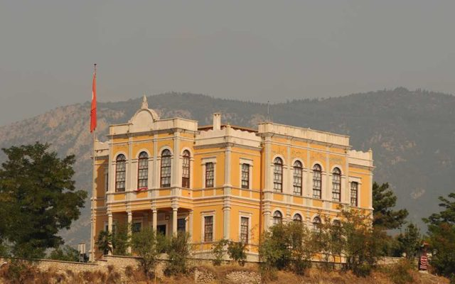
Museum Karabük SafranboluKarabük · Museum Ethnografisches Museum KaracasuAydın · Museum
Ethnografisches Museum KaracasuAydın · Museum Museum Karadeniz EreğliZonguldak · Museum
Museum Karadeniz EreğliZonguldak · Museum Karagöl (Borçka)Artvin · See
Karagöl (Borçka)Artvin · See Ausgrabungsstätte KarahantepeŞanlıurfa · Ausgrabungsstätte
Ausgrabungsstätte KarahantepeŞanlıurfa · Ausgrabungsstätte Karain-HöhleAntalya · Naturstätte
Karain-HöhleAntalya · Naturstätte Antike Siedlung KarakabaklıMersin · Ausgrabungsstätte
Antike Siedlung KarakabaklıMersin · Ausgrabungsstätte Karakuş TümülüsüAdıyaman · Ausgrabungsstätte
Karakuş TümülüsüAdıyaman · Ausgrabungsstätte Museum KaramanKaraman · Museum
Museum KaramanKaraman · Museum Karanlık KanyonErzincan · Schlucht
Karanlık KanyonErzincan · Schlucht Museum Karatay (Çini Eserler)Konya · Museum
Museum Karatay (Çini Eserler)Konya · Museum Museum und Ausgrabungsstätte Karatepe AslantaşOsmaniye · Ausgrabungsstätte
Museum und Ausgrabungsstätte Karatepe AslantaşOsmaniye · Ausgrabungsstätte Karia-WegMuğla · Wanderweg
Karia-WegMuğla · Wanderweg Chora-Kirche (Kariye-Moschee)İstanbul · Sakralbau
Chora-Kirche (Kariye-Moschee)İstanbul · Sakralbau Antike Stadt KarkamışGaziantep · Ausgrabungsstätte
Antike Stadt KarkamışGaziantep · Ausgrabungsstätte Nationalpark Karpaz und Golden Beachİskele · Naturstätte
Nationalpark Karpaz und Golden Beachİskele · Naturstätte Museum Kars Kafkas Cephesi Harp TarihiKars · Museum
Museum Kars Kafkas Cephesi Harp TarihiKars · Museum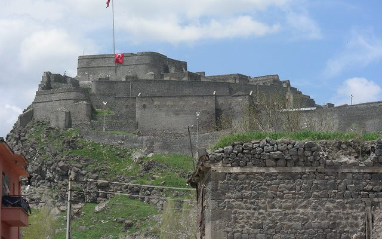
Burg KarsKars · Burg & historisches Bauwerk Museum KarsKars · MuseumKartalkaya Kayak MerkeziBolu · Skigebiet
Museum KarsKars · MuseumKartalkaya Kayak MerkeziBolu · Skigebiet Kartepe Kayak MerkeziKocaeli · Skigebiet
Kartepe Kayak MerkeziKocaeli · Skigebiet Ausgrabungsstätte KastabalaOsmaniye · Ausgrabungsstätte
Ausgrabungsstätte KastabalaOsmaniye · Ausgrabungsstätte Museum KastamonuKastamonu · Museum
Museum KastamonuKastamonu · Museum Medrese KasımiyeMardin · Sakralbau
Medrese KasımiyeMardin · Sakralbau Ausgrabungsstätte KaunosMuğla · Ausgrabungsstätte
Ausgrabungsstätte KaunosMuğla · Ausgrabungsstätte Archäologisches Museum KayseriKayseri · Museum
Archäologisches Museum KayseriKayseri · Museum Atatürk-Haus-Museum KayseriKayseri · Museum
Atatürk-Haus-Museum KayseriKayseri · Museum Burg KayseriKayseri · Burg & historisches Bauwerk
Burg KayseriKayseri · Burg & historisches Bauwerk Kaçkar DağlarıRize · Wanderweg
Kaçkar DağlarıRize · Wanderweg Versunkene Stadt KekovaAntalya · Ausgrabungsstätte
Versunkene Stadt KekovaAntalya · Ausgrabungsstätte Antike Stadt KelenderisMersin · Ausgrabungsstätte
Antike Stadt KelenderisMersin · Ausgrabungsstätte Museum Kemal Sunalİstanbul · Museum
Museum Kemal Sunalİstanbul · Museum Kemaliye (Eğin) Tarihi KentiErzincan · Burg & historisches Bauwerk
Kemaliye (Eğin) Tarihi KentiErzincan · Burg & historisches Bauwerk Kemer Köprüsü (Seydikemer)Muğla · Burg & historisches Bauwerk
Kemer Köprüsü (Seydikemer)Muğla · Burg & historisches Bauwerk Antike Stadt KeramosMuğla · Ausgrabungsstätte
Antike Stadt KeramosMuğla · Ausgrabungsstätte Antike Stadt KerkenesYozgat · Ausgrabungsstätte
Antike Stadt KerkenesYozgat · Ausgrabungsstätte Unterirdische Stadt Keskin Sulu MağaraKırıkkale · Unterirdische Stadt
Unterirdische Stadt Keskin Sulu MağaraKırıkkale · Unterirdische Stadt Key Museum (Klasik Otomobil Müzesi)İzmir · Museum
Key Museum (Klasik Otomobil Müzesi)İzmir · Museum Ausgrabungsstätte KibyraBurdur · AusgrabungsstätteMuseum KilisKilis · Museum
Ausgrabungsstätte KibyraBurdur · AusgrabungsstätteMuseum KilisKilis · Museum Antike Stadt KilistraKonya · Ausgrabungsstätte
Antike Stadt KilistraKonya · Ausgrabungsstätte Museum Kilitbahir KaleÇanakkale · Museum
Museum Kilitbahir KaleÇanakkale · Museum Burg KilitbahirÇanakkale · Burg & historisches Bauwerk
Burg KilitbahirÇanakkale · Burg & historisches Bauwerk Antike Stadt KitanauraAntalya · Ausgrabungsstätte
Antike Stadt KitanauraAntalya · Ausgrabungsstätte Ausgrabungsstätte Klarosİzmir · Ausgrabungsstätte
Ausgrabungsstätte Klarosİzmir · Ausgrabungsstätte Ausgrabungsstätte Klazomenaiİzmir · Ausgrabungsstätte
Ausgrabungsstätte Klazomenaiİzmir · Ausgrabungsstätte Archäologisches Museum KocaeliKocaeli · Museum
Archäologisches Museum KocaeliKocaeli · Museum Antike Stadt Kolophonİzmir · AusgrabungsstätteAntike Stadt Komana PontikaTokat · Ausgrabungsstätte
Antike Stadt Kolophonİzmir · AusgrabungsstätteAntike Stadt Komana PontikaTokat · Ausgrabungsstätte Museum KonuralpDüzce · Museum
Museum KonuralpDüzce · Museum Archäologisches Museum KonyaKonya · Museum
Archäologisches Museum KonyaKonya · Museum Atatürk-Haus-Museum KonyaKonya · Museum
Atatürk-Haus-Museum KonyaKonya · Museum Ethnografisches Museum KonyaKonya · Museum
Ethnografisches Museum KonyaKonya · Museum Museum Konya PanoramaKonya · MuseumAntike Stadt KorydallaAntalya · Ausgrabungsstätte
Museum Konya PanoramaKonya · MuseumAntike Stadt KorydallaAntalya · Ausgrabungsstätte Korykos und MädchenburgMersin · Burg & historisches Bauwerk
Korykos und MädchenburgMersin · Burg & historisches Bauwerk Kossouth Evi MüzesiKütahya · Museum
Kossouth Evi MüzesiKütahya · Museum Kossuth Evi MüzesiKütahya · Museum
Kossuth Evi MüzesiKütahya · Museum Karawanserei KozaBursa · Burg & historisches BauwerkMuseum und Ausgrabungsstätte Kral MezarlarıGazimağusa · Ausgrabungsstätte
Karawanserei KozaBursa · Burg & historisches BauwerkMuseum und Ausgrabungsstätte Kral MezarlarıGazimağusa · Ausgrabungsstätte Antike Stadt KremnaBurdur · Ausgrabungsstätte
Antike Stadt KremnaBurdur · Ausgrabungsstätte Kubadabad-PalastKonya · Ausgrabungsstätte
Kubadabad-PalastKonya · Ausgrabungsstätte Museum Kurtuluş SavaşıAnkara · Museum
Museum Kurtuluş SavaşıAnkara · Museum Kuruköprü Anıt Müzesi ve Geleneksel Adana EviAdana · Museum
Kuruköprü Anıt Müzesi ve Geleneksel Adana EviAdana · Museum Naturpark Kurşunlu-WasserfallAntalya · Wasserfall
Naturpark Kurşunlu-WasserfallAntalya · Wasserfall Museum Kuva-Yi MilliyeBalıkesir · Museum
Museum Kuva-Yi MilliyeBalıkesir · Museum Antike Stadt KyaneaiAntalya · Ausgrabungsstätte
Antike Stadt KyaneaiAntalya · Ausgrabungsstätte Antike Stadt Kymeİzmir · Ausgrabungsstätte
Antike Stadt Kymeİzmir · Ausgrabungsstätte Antike Stadt KyzikosBalıkesir · Ausgrabungsstätte
Antike Stadt KyzikosBalıkesir · Ausgrabungsstätte Museum Kâzım Karabekir Paşaİstanbul · Museum
Museum Kâzım Karabekir Paşaİstanbul · Museum Nationalpark Köprülü KanyonAntalya · Schlucht
Nationalpark Köprülü KanyonAntalya · Schlucht Köprüpazar (Aspendos)-BrückeAntalya · Burg & historisches Bauwerk
Köprüpazar (Aspendos)-BrückeAntalya · Burg & historisches Bauwerk Köyceğiz-SeeMuğla · See
Köyceğiz-SeeMuğla · See Ausgrabungsstätte KültepeKayseri · Ausgrabungsstätte
Ausgrabungsstätte KültepeKayseri · Ausgrabungsstätte Burg KütahyaKütahya · Burg & historisches BauwerkMuseum KütahyaKütahya · Museum
Burg KütahyaKütahya · Burg & historisches BauwerkMuseum KütahyaKütahya · Museum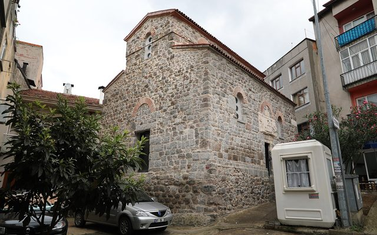
Küçük Ayvasıl St. Anna-KircheTrabzon · Sakralbau Küçüksu-Pavillonİstanbul · Burg & historisches Bauwerk
Küçüksu-Pavillonİstanbul · Burg & historisches Bauwerk Museum KırklareliKırklareli · MuseumMuseum KırşehirKırşehir · Museum
Museum KırklareliKırklareli · MuseumMuseum KırşehirKırşehir · Museum Kız-Turmİstanbul · Burg & historisches Bauwerk
Kız-Turmİstanbul · Burg & historisches Bauwerk KızılkuleAntalya · Burg & historisches Bauwerk
KızılkuleAntalya · Burg & historisches Bauwerk Ausgrabungsstätte LabraundaMuğla · Ausgrabungsstätte
Ausgrabungsstätte LabraundaMuğla · Ausgrabungsstätte Ausgrabungsstätte LaginaMuğla · Ausgrabungsstätte
Ausgrabungsstätte LaginaMuğla · Ausgrabungsstätte Lala Mustafa Paşa-MoscheeGazimağusa · SakralbauAntike Stadt Lambousa (Lapithos)Girne · AusgrabungsstätteAntike Stadt LamosAntalya · Ausgrabungsstätte
Lala Mustafa Paşa-MoscheeGazimağusa · SakralbauAntike Stadt Lambousa (Lapithos)Girne · AusgrabungsstätteAntike Stadt LamosAntalya · Ausgrabungsstätte Ausgrabungsstätte LaodikeiaDenizli · Ausgrabungsstätte
Ausgrabungsstätte LaodikeiaDenizli · Ausgrabungsstätte Museum LapidariLefkoşa · Museum
Museum LapidariLefkoşa · Museum Latife Hanım Köşkü Anı-Hausİzmir · Museum
Latife Hanım Köşkü Anı-Hausİzmir · Museum Latifoğlu-KonakTokat · Museum
Latifoğlu-KonakTokat · Museum Antike Stadt Lebedosİzmir · Ausgrabungsstätte
Antike Stadt Lebedosİzmir · Ausgrabungsstätte Likya Uygarlıkları Müzesi ve Andrıake ÖrenyeriAntalya · Ausgrabungsstätte
Likya Uygarlıkları Müzesi ve Andrıake ÖrenyeriAntalya · Ausgrabungsstätte Likya-WegMuğla · Wanderweg
Likya-WegMuğla · Wanderweg Ausgrabungsstätte LimyraAntalya · AusgrabungsstätteEthnografisches Museum im Livapaşa-KonakKastamonu · Museum
Ausgrabungsstätte LimyraAntalya · AusgrabungsstätteEthnografisches Museum im Livapaşa-KonakKastamonu · Museum Antike Stadt LorymaMuğla · Ausgrabungsstätte
Antike Stadt LorymaMuğla · Ausgrabungsstätte Lausanne-Denkmal und Bahnhof KaraağaçEdirne · Burg & historisches Bauwerk
Lausanne-Denkmal und Bahnhof KaraağaçEdirne · Burg & historisches Bauwerk Museum LületaşıEskişehir · MuseumMuseum MadenZonguldak · Museum
Museum LületaşıEskişehir · MuseumMuseum MadenZonguldak · Museum Antike Stadt MagarsusAdana · Ausgrabungsstätte
Antike Stadt MagarsusAdana · Ausgrabungsstätte Ausgrabungsstätte MagnesiaAydın · Ausgrabungsstätte
Ausgrabungsstätte MagnesiaAydın · Ausgrabungsstätte Mahmut Bey-MoscheeKastamonu · Sakralbau
Mahmut Bey-MoscheeKastamonu · Sakralbau Malabadi-BrückeDiyarbakır · Burg & historisches BauwerkMalatya Atatürk Anı Evi ve Etnoğrafya MüzesiMalatya · Museum
Malabadi-BrückeDiyarbakır · Burg & historisches BauwerkMalatya Atatürk Anı Evi ve Etnoğrafya MüzesiMalatya · Museum Museum MalatyaMalatya · MuseumMuseum MalazgirtMuş · Museum
Museum MalatyaMalatya · MuseumMuseum MalazgirtMuş · Museum Burg MamureMersin · Burg & historisches Bauwerk
Burg MamureMersin · Burg & historisches Bauwerk Manavgat-WasserfallAntalya · Wasserfall
Manavgat-WasserfallAntalya · Wasserfall Museum Akhisar und Tepe-Friedhof (Thyateira)Manisa · Ausgrabungsstätte
Museum Akhisar und Tepe-Friedhof (Thyateira)Manisa · Ausgrabungsstätte Museum ManisaManisa · Museum
Museum ManisaManisa · Museum Museum MardinMardin · MuseumMuseum MarmarisMuğla · Museum
Museum MardinMardin · MuseumMuseum MarmarisMuğla · Museum Maslak Kasırlarıİstanbul · Burg & historisches Bauwerk
Maslak Kasırlarıİstanbul · Burg & historisches Bauwerk Museum Masumiyetİstanbul · MuseumUnterirdische Stadt MazıNevşehir · Unterirdische Stadt
Museum Masumiyetİstanbul · MuseumUnterirdische Stadt MazıNevşehir · Unterirdische Stadt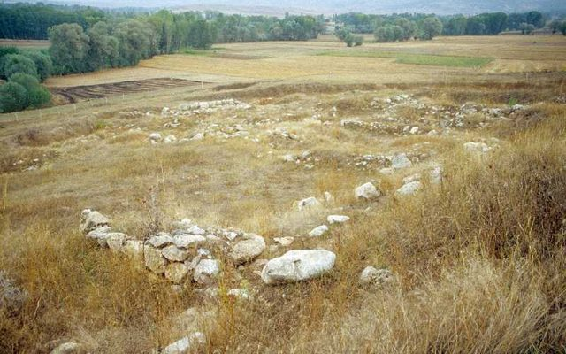
Siedlungshügel MaşatTokat · AusgrabungsstätteMehmet Akif Ersoy Edebiyat Müze KütüphanesiAnkara · Museum Mehmet Akif Ersoy Hatıra-Hausİstanbul · MuseumArchäologisches Museum Mehmet Cabir AlperBatman · Museum
Mehmet Akif Ersoy Hatıra-Hausİstanbul · MuseumArchäologisches Museum Mehmet Cabir AlperBatman · Museum Meke-SeeKonya · See
Meke-SeeKonya · See Melen ÇayıDüzce · Rafting
Melen ÇayıDüzce · Rafting Meriç-BrückeEdirne · Burg & historisches Bauwerk
Meriç-BrückeEdirne · Burg & historisches Bauwerk Atatürk-Haus-Museum MersinMersin · Museum
Atatürk-Haus-Museum MersinMersin · Museum Mädchenburg (Kızkalesi)Mersin · Burg & historisches Bauwerk
Mädchenburg (Kızkalesi)Mersin · Burg & historisches Bauwerk Museum MersinMersin · MuseumMuseum Mersin TarsusMersin · Museum
Museum MersinMersin · MuseumMuseum Mersin TarsusMersin · Museum Meryem Ana-Hausİzmir · Sakralbau
Meryem Ana-Hausİzmir · Sakralbau Kloster Meryem AnaGiresun · Sakralbau
Kloster Meryem AnaGiresun · Sakralbau Ausgrabungsstätte Metropolisİzmir · Ausgrabungsstätte
Ausgrabungsstätte Metropolisİzmir · Ausgrabungsstätte Museum MevlanaKonya · Museum
Museum MevlanaKonya · Museum Museum Mevlevi TekkeLefkoşa · MuseumMuseum MevlevihaneAntalya · Museum
Museum Mevlevi TekkeLefkoşa · MuseumMuseum MevlevihaneAntalya · Museum Grabmonument MezgitkaleMersin · Ausgrabungsstätte
Grabmonument MezgitkaleMersin · Ausgrabungsstätte Mher Kapısı (Meher Kapı)Van · Ausgrabungsstätte
Mher Kapısı (Meher Kapı)Van · Ausgrabungsstätte Ausgrabungsstätte Midas YazılıkayaEskişehir · Ausgrabungsstätte
Ausgrabungsstätte Midas YazılıkayaEskişehir · Ausgrabungsstätte Mihrimah-Sultan-Moschee (Edirnekapı)İstanbul · Sakralbau
Mihrimah-Sultan-Moschee (Edirnekapı)İstanbul · Sakralbau Burg und Ausgrabungsstätte Beçin, MilasMuğla · Ausgrabungsstätte
Burg und Ausgrabungsstätte Beçin, MilasMuğla · Ausgrabungsstätte Ausgrabungsstätte Milas EuromosMuğla · AusgrabungsstätteMuseum Milas Taş EserlerMuğla · Museum
Ausgrabungsstätte Milas EuromosMuğla · AusgrabungsstätteMuseum Milas Taş EserlerMuğla · Museum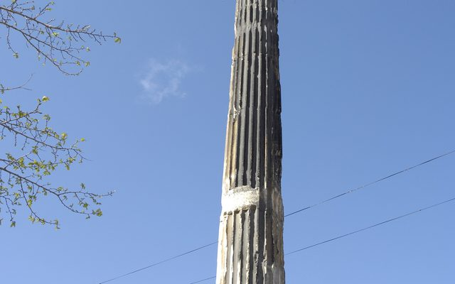
Milas Uzunyuva (Hekatomnos Anıt Mezarı)Muğla · Ausgrabungsstätte Grabmonument und Museum Uzunyuva (Hekatomneion), MilasMuğla · Ausgrabungsstätte
Grabmonument und Museum Uzunyuva (Hekatomneion), MilasMuğla · Ausgrabungsstätte Museum Milas İassos Balık PazarıMuğla · Museum
Museum Milas İassos Balık PazarıMuğla · Museum Museum MiletAydın · Museum
Museum MiletAydın · Museum Ausgrabungsstätte MiletAydın · Ausgrabungsstätte
Ausgrabungsstätte MiletAydın · Ausgrabungsstätte Mimar Sinan ve Kent MüzesiKayseri · Museum
Mimar Sinan ve Kent MüzesiKayseri · Museum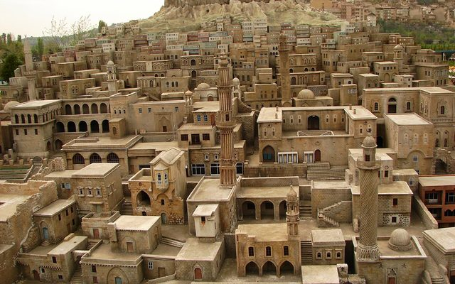
Miniatürkİstanbul · Museum Antike Stadt Misis (Mopsuestia)Adana · Ausgrabungsstätte
Antike Stadt Misis (Mopsuestia)Adana · Ausgrabungsstätte Mosaikmuseum MisisAdana · Museum
Mosaikmuseum MisisAdana · Museum Mke Sanayi ve Teknoloji MüzesiAnkara · Museum
Mke Sanayi ve Teknoloji MüzesiAnkara · Museum Kloster Mor GabrielMardin · SakralbauMuseum Mta Şehvar Doğa TarihiAnkara · MuseumUnterirdische Stadt MucurKırşehir · Unterirdische Stadt
Kloster Mor GabrielMardin · SakralbauMuseum Mta Şehvar Doğa TarihiAnkara · MuseumUnterirdische Stadt MucurKırşehir · Unterirdische Stadt Mudanya Mütareke Evi MüzesiBursa · Museum
Mudanya Mütareke Evi MüzesiBursa · Museum Külliye MuradiyeBursa · Sakralbau
Külliye MuradiyeBursa · Sakralbau Muradiye-WasserfallVan · Wasserfall
Muradiye-WasserfallVan · Wasserfall Mustafapaşa (Sinasos) KöyüNevşehir · Burg & historisches Bauwerk
Mustafapaşa (Sinasos) KöyüNevşehir · Burg & historisches Bauwerk Denkmalmuseum Muğla Bodrum MausoleiumMuğla · Museum
Denkmalmuseum Muğla Bodrum MausoleiumMuğla · Museum Ausgrabungsstätte Muğla KnidosMuğla · Ausgrabungsstätte
Ausgrabungsstätte Muğla KnidosMuğla · Ausgrabungsstätte Museum MuğlaMuğla · MuseumMuseum MuşMuş · Museum
Museum MuğlaMuğla · MuseumMuseum MuşMuş · Museum Antike Stadt MyndosMuğla · Ausgrabungsstätte
Antike Stadt MyndosMuğla · Ausgrabungsstätte Ausgrabungsstätte MyraAntalya · Ausgrabungsstätte
Ausgrabungsstätte MyraAntalya · Ausgrabungsstätte Antike Stadt MyusAydın · Ausgrabungsstätte
Antike Stadt MyusAydın · Ausgrabungsstätte Müze Gazhaneİstanbul · Museum
Müze Gazhaneİstanbul · Museum Nakoleia ve Seyitgazi KülliyesiEskişehir · Sakralbau
Nakoleia ve Seyitgazi KülliyesiEskişehir · Sakralbau Museum Namazgâh TabyasıÇanakkale · Museum
Museum Namazgâh TabyasıÇanakkale · Museum Burg NamrunMersin · Burg & historisches BauwerkNamık Kemal Evi MüzesiTekirdağ · Museum
Burg NamrunMersin · Burg & historisches BauwerkNamık Kemal Evi MüzesiTekirdağ · Museum Namık Kemal Zindanı ve MüzesiGazimağusa · MuseumAntike Stadt NeandreiaÇanakkale · Ausgrabungsstätte
Namık Kemal Zindanı ve MüzesiGazimağusa · MuseumAntike Stadt NeandreiaÇanakkale · Ausgrabungsstätte Necmi İğe Evi Etnografya MüzesiEdirne · Museum
Necmi İğe Evi Etnografya MüzesiEdirne · Museum Nemrut Krater-SeeBitlis · SeeNevşehir Hacıbektaş Arkeoloji ve Etnografya MüzesiNevşehir · MuseumAtatürk-Haus-Museum Nevşehir HacıbektaşNevşehir · Museum
Nemrut Krater-SeeBitlis · SeeNevşehir Hacıbektaş Arkeoloji ve Etnografya MüzesiNevşehir · MuseumAtatürk-Haus-Museum Nevşehir HacıbektaşNevşehir · Museum Museum NevşehirNevşehir · MuseumMuseum Nilüfer Hatun İmareti Türk İslam EserleriBursa · MuseumAusgrabungsstätte Niğde AndavalNiğde · Ausgrabungsstätte
Museum NevşehirNevşehir · MuseumMuseum Nilüfer Hatun İmareti Türk İslam EserleriBursa · MuseumAusgrabungsstätte Niğde AndavalNiğde · Ausgrabungsstätte Museum NiğdeNiğde · Museum
Museum NiğdeNiğde · Museum Antike Stadt Notionİzmir · Ausgrabungsstätte
Antike Stadt Notionİzmir · Ausgrabungsstätte Nymphaion (Nif) Laskaris-Palastİzmir · Burg & historisches Bauwerk
Nymphaion (Nif) Laskaris-Palastİzmir · Burg & historisches Bauwerk Ausgrabungsstätte Nysa SultanhisarAydın · Ausgrabungsstätte
Ausgrabungsstätte Nysa SultanhisarAydın · Ausgrabungsstätte Odtü Bilim ve Teknoloji MüzesiAnkara · Museum
Odtü Bilim ve Teknoloji MüzesiAnkara · Museum Odunpazarı Modern MüzeEskişehir · Museum
Odunpazarı Modern MüzeEskişehir · Museum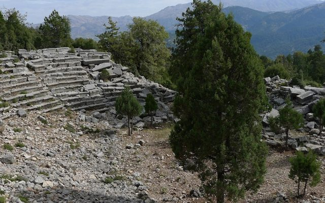
Antike Stadt OinoandaMuğla · Ausgrabungsstätte Antike Stadt OlbaMersin · Ausgrabungsstätte
Antike Stadt OlbaMersin · Ausgrabungsstätte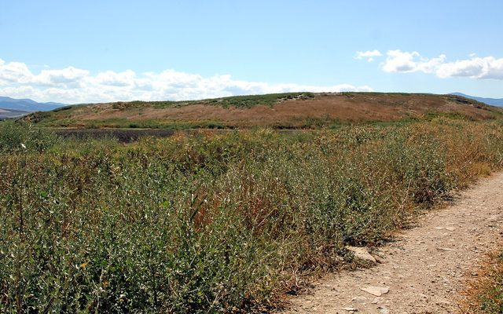
Siedlungshügel OluzAmasya · Ausgrabungsstätte Ausgrabungsstätte OlymposAntalya · Ausgrabungsstätte
Ausgrabungsstätte OlymposAntalya · Ausgrabungsstätte On Gözlü (Dicle)-BrückeDiyarbakır · Burg & historisches BauwerkMuseum OrduOrdu · Museum
On Gözlü (Dicle)-BrückeDiyarbakır · Burg & historisches BauwerkMuseum OrduOrdu · Museum Museum Orhan Kemalİstanbul · Museum
Museum Orhan Kemalİstanbul · Museum Museum Osman Hamdi BeyKocaeli · MuseumMuseum OsmaniyeOsmaniye · MuseumOsmanlı Evi MüzesiBursa · Museum
Museum Osman Hamdi BeyKocaeli · MuseumMuseum OsmaniyeOsmaniye · MuseumOsmanlı Evi MüzesiBursa · Museum Burg OthelloGazimağusa · Burg & historisches Bauwerk
Burg OthelloGazimağusa · Burg & historisches Bauwerk Siedlungshügel OylumKilis · Ausgrabungsstätte
Siedlungshügel OylumKilis · Ausgrabungsstätte Palandöken Kayak MerkeziErzurum · Skigebiet
Palandöken Kayak MerkeziErzurum · Skigebiet Museum Panorama 1453 Tarihİstanbul · Museum
Museum Panorama 1453 Tarihİstanbul · Museum Antike Stadt ParionÇanakkale · Ausgrabungsstätte
Antike Stadt ParionÇanakkale · Ausgrabungsstätte Ausgrabungsstätte PataraAntalya · Ausgrabungsstätte
Ausgrabungsstätte PataraAntalya · Ausgrabungsstätte Antike Stadt PedasaMuğla · AusgrabungsstätteAntike Stadt PednelissosAntalya · Ausgrabungsstätte
Antike Stadt PedasaMuğla · AusgrabungsstätteAntike Stadt PednelissosAntalya · Ausgrabungsstätte Museum Peraİstanbul · Museum
Museum Peraİstanbul · Museum Ausgrabungsstätte PergeAntalya · AusgrabungsstätteAntike Stadt PerpereneBalıkesir · Ausgrabungsstätte
Ausgrabungsstätte PergeAntalya · AusgrabungsstätteAntike Stadt PerpereneBalıkesir · Ausgrabungsstätte Ausgrabungsstätte PerreAdıyaman · Ausgrabungsstätte
Ausgrabungsstätte PerreAdıyaman · Ausgrabungsstätte Ausgrabungsstätte PessinusEskişehir · Ausgrabungsstätte
Ausgrabungsstätte PessinusEskişehir · Ausgrabungsstätte Ausgrabungsstätte PhaselisAntalya · Ausgrabungsstätte
Ausgrabungsstätte PhaselisAntalya · Ausgrabungsstätte Antike Stadt PhellosAntalya · Ausgrabungsstätte
Antike Stadt PhellosAntalya · Ausgrabungsstätte Antike Stadt Phokaia (Foça)İzmir · Ausgrabungsstätte
Antike Stadt Phokaia (Foça)İzmir · Ausgrabungsstätte Museum Pierre Lotiİstanbul · Museum
Museum Pierre Lotiİstanbul · Museum Antike Stadt Pisidia AntiokheiaIsparta · AusgrabungsstätteAntike Stadt PompeiopolisKastamonu · Ausgrabungsstätte
Antike Stadt Pisidia AntiokheiaIsparta · AusgrabungsstätteAntike Stadt PompeiopolisKastamonu · Ausgrabungsstätte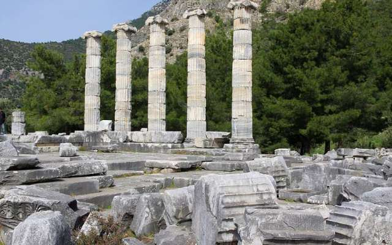
Ausgrabungsstätte PrieneAydın · Ausgrabungsstätte Antike Stadt Prusias ad Hypium (Konuralp)Düzce · Ausgrabungsstätte
Antike Stadt Prusias ad Hypium (Konuralp)Düzce · Ausgrabungsstätte Burg PydnaiMuğla · Ausgrabungsstätte
Burg PydnaiMuğla · Ausgrabungsstätte Museum Rahmi M. Koçİstanbul · Museum
Museum Rahmi M. Koçİstanbul · Museum Rami Kışlası (Rami Kütüphanesi)İstanbul · Burg & historisches Bauwerk
Rami Kışlası (Rami Kütüphanesi)İstanbul · Burg & historisches Bauwerk Museum Resim HeykelAnkara · Museum
Museum Resim HeykelAnkara · Museum Museum Rezan Hasİstanbul · Museum
Museum Rezan Hasİstanbul · Museum Antike Stadt RhodiapolisAntalya · Ausgrabungsstätte
Antike Stadt RhodiapolisAntalya · Ausgrabungsstätte Atatürk-Haus-Museum RizeRize · Museum
Atatürk-Haus-Museum RizeRize · Museum Museum RizeRize · Museum
Museum RizeRize · Museum Römische Thermen von AnkaraAnkara · Ausgrabungsstätte
Römische Thermen von AnkaraAnkara · Ausgrabungsstätte Festung Rumelihisarıİstanbul · Burg & historisches Bauwerk
Festung Rumelihisarıİstanbul · Burg & historisches Bauwerk Ausgrabungsstätte RumkaleGaziantep · Ausgrabungsstätte
Ausgrabungsstätte RumkaleGaziantep · Ausgrabungsstätte Rüstem Paşa-Moscheeİstanbul · Sakralbau
Rüstem Paşa-Moscheeİstanbul · Sakralbau Museum Sadberk Hanımİstanbul · Museum
Museum Sadberk Hanımİstanbul · Museum Ausgrabungsstätte SagalassosBurdur · Ausgrabungsstätte
Ausgrabungsstätte SagalassosBurdur · Ausgrabungsstätte Medrese SahabiyeKayseri · Sakralbau
Medrese SahabiyeKayseri · Sakralbau Museum Sait Faik Abasıyanıkİstanbul · Museum
Museum Sait Faik Abasıyanıkİstanbul · Museum Museum SakaryaSakarya · Museum
Museum SakaryaSakarya · Museum Saklıkent-SchluchtMuğla · Schlucht
Saklıkent-SchluchtMuğla · Schlucht Stadtmuseum Sakıp Sabancı MardinMardin · Museum
Stadtmuseum Sakıp Sabancı MardinMardin · Museum Museum Sakıp Sabancıİstanbul · Museum
Museum Sakıp Sabancıİstanbul · Museum Ausgrabungsstätte SalamisGazimağusa · Ausgrabungsstätte
Ausgrabungsstätte SalamisGazimağusa · Ausgrabungsstätte Salda-SeeBurdur · See
Salda-SeeBurdur · See Salt Galataİstanbul · Museum
Salt Galataİstanbul · Museum Museum SamsunSamsun · Museum
Museum SamsunSamsun · Museum Sapanca-SeeSakarya · See
Sapanca-SeeSakarya · See Unterirdische Stadt Saratlı KırkgözAksaray · Unterirdische Stadt
Unterirdische Stadt Saratlı KırkgözAksaray · Unterirdische Stadt Ausgrabungsstätte SardesManisa · Ausgrabungsstätte
Ausgrabungsstätte SardesManisa · Ausgrabungsstätte Sarissa (Kuşaklı) Hitit KentiSivas · Ausgrabungsstätte
Sarissa (Kuşaklı) Hitit KentiSivas · Ausgrabungsstätte Karawanserei SarıhanNevşehir · Burg & historisches Bauwerk
Karawanserei SarıhanNevşehir · Burg & historisches Bauwerk Sarıkamış Kayak MerkeziKars · Skigebiet
Sarıkamış Kayak MerkeziKars · Skigebiet Sarıkaya Roma-BadYozgat · Ausgrabungsstätte
Sarıkaya Roma-BadYozgat · Ausgrabungsstätte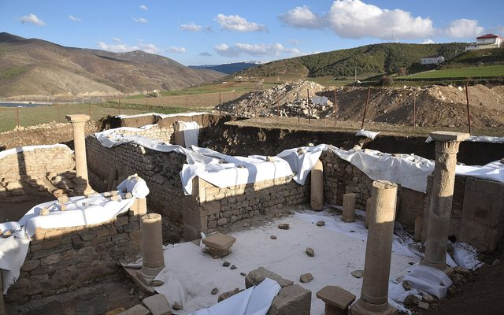
Antike Stadt SatalaGümüşhane · AusgrabungsstätteAntike Stadt SebastopolisTokat · Ausgrabungsstätte Antike Stadt SebedaAntalya · Ausgrabungsstätte
Antike Stadt SebedaAntalya · Ausgrabungsstätte Ausgrabungsstätte Sedir AdasıMuğla · Ausgrabungsstätte
Ausgrabungsstätte Sedir AdasıMuğla · Ausgrabungsstätte Museum Seka KâğıtKocaeli · Museum
Museum Seka KâğıtKocaeli · Museum Antike Stadt Seleukeia (Pamfilya)Antalya · Ausgrabungsstätte
Antike Stadt Seleukeia (Pamfilya)Antalya · Ausgrabungsstätte Antike Stadt SelgeAntalya · Ausgrabungsstätte
Antike Stadt SelgeAntalya · Ausgrabungsstätte Selimiye-MoscheeLefkoşa · Sakralbau
Selimiye-MoscheeLefkoşa · Sakralbau Antike Stadt SelinusAntalya · Ausgrabungsstätte
Antike Stadt SelinusAntalya · Ausgrabungsstätte Museum SideAntalya · Museum
Museum SideAntalya · Museum Ausgrabungsstätte SideAntalya · Ausgrabungsstätte
Ausgrabungsstätte SideAntalya · Ausgrabungsstätte Antike Stadt SidymaMuğla · Ausgrabungsstätte
Antike Stadt SidymaMuğla · Ausgrabungsstätte Große Moschee von SiirtSiirt · Sakralbau
Große Moschee von SiirtSiirt · Sakralbau Silifke Astım-HöhleMersin · Naturstätte
Silifke Astım-HöhleMersin · Naturstätte Silifke Atatürk Evi ve Etnografya MüzesiMersin · Museum
Silifke Atatürk Evi ve Etnografya MüzesiMersin · Museum Ausgrabungsstätte Silifke AyateklaMersin · Ausgrabungsstätte
Ausgrabungsstätte Silifke AyateklaMersin · Ausgrabungsstätte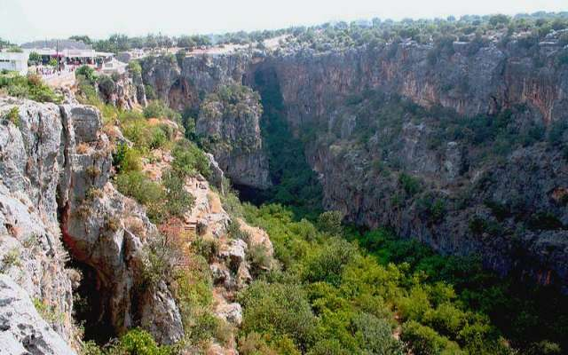
Himmels- und HöllenschluchtMersin · Naturstätte Burg SilifkeMersin · Burg & historisches Bauwerk
Burg SilifkeMersin · Burg & historisches Bauwerk Museum SilifkeMersin · Museum
Museum SilifkeMersin · Museum Mosaikmuseum Silifke NarlıkuyuMersin · Museum
Mosaikmuseum Silifke NarlıkuyuMersin · Museum Sille ve Aya Elenia KilisesiKonya · Sakralbau
Sille ve Aya Elenia KilisesiKonya · Sakralbau Antike Stadt SillyonAntalya · AusgrabungsstätteAtatürk-Haus-Museum SilvanDiyarbakır · Museum
Antike Stadt SillyonAntalya · AusgrabungsstätteAtatürk-Haus-Museum SilvanDiyarbakır · Museum Ausgrabungsstätte SimenaAntalya · AusgrabungsstätteEthnografisches Museum Sinop ArslantorunlarSinop · Museum
Ausgrabungsstätte SimenaAntalya · AusgrabungsstätteEthnografisches Museum Sinop ArslantorunlarSinop · Museum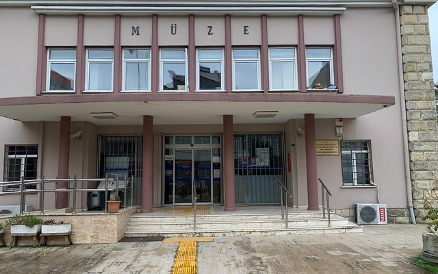
Museum SinopSinop · Museum Sirkeli Höyük und Muwatalli-ReliefAdana · Ausgrabungsstätte
Sirkeli Höyük und Muwatalli-ReliefAdana · Ausgrabungsstätte Archäologisches Museum SivasSivas · Museum
Archäologisches Museum SivasSivas · Museum Sivas Atatürk ve Kongre MüzesiSivas · Museum
Sivas Atatürk ve Kongre MüzesiSivas · Museum Sobesos Antik Kenti (Şahinefendi)Nevşehir · AusgrabungsstätteAusgrabungsstätte SobessosNevşehir · Ausgrabungsstätte
Sobesos Antik Kenti (Şahinefendi)Nevşehir · AusgrabungsstätteAusgrabungsstätte SobessosNevşehir · Ausgrabungsstätte Sofraz Anıt MezarıAdıyaman · Ausgrabungsstätte
Sofraz Anıt MezarıAdıyaman · Ausgrabungsstätte Burg SoftaMersin · Burg & historisches Bauwerk
Burg SoftaMersin · Burg & historisches Bauwerk Antike Stadt Soli PompeiopolisMersin · Ausgrabungsstätte
Antike Stadt Soli PompeiopolisMersin · Ausgrabungsstätte Ausgrabungsstätte SoliLefke · Ausgrabungsstätte
Ausgrabungsstätte SoliLefke · Ausgrabungsstätte Antike Stadt SoğmatarŞanlıurfa · Ausgrabungsstätte
Antike Stadt SoğmatarŞanlıurfa · Ausgrabungsstätte St. Antuan-Kircheİstanbul · Sakralbau
St. Antuan-Kircheİstanbul · Sakralbau Kloster St. BarnabasGazimağusa · Sakralbau
Kloster St. BarnabasGazimağusa · Sakralbau Burg St. HilarionGirne · Burg & historisches Bauwerk
Burg St. HilarionGirne · Burg & historisches Bauwerk Denkmalmuseum St. PierreHatay · Museum
Denkmalmuseum St. PierreHatay · Museum Kloster St. SimonHatay · Sakralbau
Kloster St. SimonHatay · Sakralbau Ausgrabungsstätte StratonikeiaMuğla · Ausgrabungsstätte
Ausgrabungsstätte StratonikeiaMuğla · Ausgrabungsstätte Gesundheitsmuseum im Külliye Sultan Bayezids II.Edirne · Museum
Gesundheitsmuseum im Külliye Sultan Bayezids II.Edirne · Museum Blaue Moschee (Sultan-Ahmed-Moschee)İstanbul · Sakralbau
Blaue Moschee (Sultan-Ahmed-Moschee)İstanbul · Sakralbau Sultanahmet Meydanı (Hipodrom)İstanbul · Ausgrabungsstätte
Sultanahmet Meydanı (Hipodrom)İstanbul · Ausgrabungsstätte Karawanserei SultanhanıAksaray · Burg & historisches BauwerkSultanlar-WegEdirne · Wanderweg
Karawanserei SultanhanıAksaray · Burg & historisches BauwerkSultanlar-WegEdirne · Wanderweg Antike Stadt SuraAntalya · Ausgrabungsstätte
Antike Stadt SuraAntalya · Ausgrabungsstätte Surp Giragos Ermeni-KircheDiyarbakır · Sakralbau
Surp Giragos Ermeni-KircheDiyarbakır · Sakralbau Suuçtu-WasserfallBursa · Wasserfall
Suuçtu-WasserfallBursa · Wasserfall Museum Söğüt Ertuğrul GaziBilecik · Museum
Museum Söğüt Ertuğrul GaziBilecik · Museum Süleymaniye-Moscheeİstanbul · Sakralbau
Süleymaniye-Moscheeİstanbul · Sakralbau Kloster SümelaTrabzon · SakralbauEthnografisches Museum TahtakuşlarBalıkesir · Museum
Kloster SümelaTrabzon · SakralbauEthnografisches Museum TahtakuşlarBalıkesir · Museum Denkmalmuseum TaksiyarhisBalıkesir · Museum
Denkmalmuseum TaksiyarhisBalıkesir · Museum Antike Stadt TapureliMersin · Ausgrabungsstätte
Antike Stadt TapureliMersin · Ausgrabungsstätte Tarihi CezaeviSinop · Burg & historisches Bauwerk
Tarihi CezaeviSinop · Burg & historisches Bauwerk Tarsus Antik Roma-WegMersin · Ausgrabungsstätte
Tarsus Antik Roma-WegMersin · Ausgrabungsstätte Tarsus GözlükuleMersin · Ausgrabungsstätte
Tarsus GözlükuleMersin · Ausgrabungsstätte Kleopatra-Tor und antike Straße, TarsusMersin · Ausgrabungsstätte
Kleopatra-Tor und antike Straße, TarsusMersin · Ausgrabungsstätte Denkmalmuseum Tarsus St. PaulMersin · Museum
Denkmalmuseum Tarsus St. PaulMersin · Museum Tarsus St. Paul KuyusuMersin · Sakralbau
Tarsus St. Paul KuyusuMersin · Sakralbau Unterirdische Stadt TatlarinNevşehir · Unterirdische StadtMuseum Tayfun Talipoğlu DaktiloEskişehir · Museum
Unterirdische Stadt TatlarinNevşehir · Unterirdische StadtMuseum Tayfun Talipoğlu DaktiloEskişehir · Museum Tazı-SchluchtAntalya · Schlucht
Tazı-SchluchtAntalya · Schlucht TaşköprüAdana · Burg & historisches Bauwerk
TaşköprüAdana · Burg & historisches Bauwerk Museum Taşucu Aslan Eyce AmforaMersin · Museum
Museum Taşucu Aslan Eyce AmforaMersin · Museum Taşucu Atatürk-HausMersin · Museum
Taşucu Atatürk-HausMersin · Museum Museum Tcdd Açık Hava Buharlı LokomotifAnkara · Museum
Museum Tcdd Açık Hava Buharlı LokomotifAnkara · Museum Museum Tcdd Malıköy Tren İstasyonuAnkara · Museum
Museum Tcdd Malıköy Tren İstasyonuAnkara · Museum Antike Stadt TeimiussaAntalya · AusgrabungsstätteAtatürk-Haus-Museum Tekirdağ MuratlıTekirdağ · Museum
Antike Stadt TeimiussaAntalya · AusgrabungsstätteAtatürk-Haus-Museum Tekirdağ MuratlıTekirdağ · Museum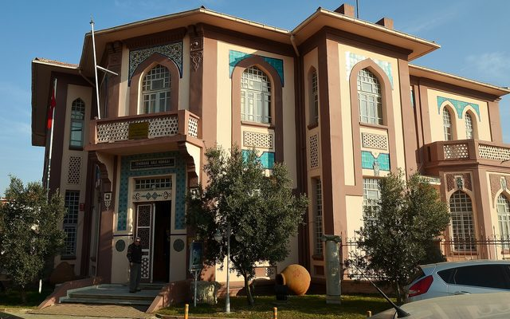
Museum TekirdağTekirdağ · Museum Tekkeköy MağaralarıSamsun · Ausgrabungsstätte
Tekkeköy MağaralarıSamsun · Ausgrabungsstätte Ausgrabungsstätte Teosİzmir · Ausgrabungsstätte
Ausgrabungsstätte Teosİzmir · Ausgrabungsstätte Ausgrabungsstätte TermessosAntalya · Ausgrabungsstätte
Ausgrabungsstätte TermessosAntalya · Ausgrabungsstätte Theodosius Forumu Kalıntılarıİstanbul · Ausgrabungsstätte
Theodosius Forumu Kalıntılarıİstanbul · Ausgrabungsstätte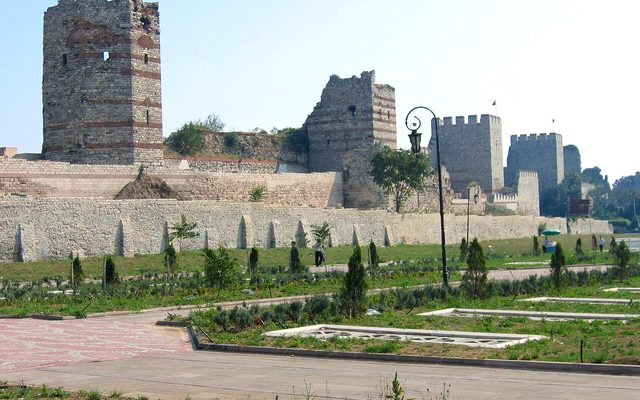
Theodosius Surlarıİstanbul · Burg & historisches BauwerkBurg TilbaşarGaziantep · Burg & historisches Bauwerk Siedlungshügel TilmenGaziantep · Ausgrabungsstätte
Siedlungshügel TilmenGaziantep · Ausgrabungsstätte Museum Tireİzmir · Museum
Museum Tireİzmir · Museum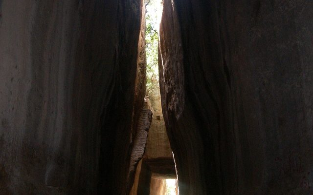
Titus Tüneli (Vespasianus Tüneli)Hatay · Ausgrabungsstätte Museum Tofaş Anadolu ArabalarıBursa · MuseumTokat Atatürk Evi ve Etnografya MüzesiTokat · Museum
Museum Tofaş Anadolu ArabalarıBursa · MuseumTokat Atatürk Evi ve Etnografya MüzesiTokat · Museum Museum TokatTokat · Museum
Museum TokatTokat · Museum Tokat TaşhanTokat · Burg & historisches Bauwerk
Tokat TaşhanTokat · Burg & historisches Bauwerk Topkapı-Palastİstanbul · Burg & historisches Bauwerk
Topkapı-Palastİstanbul · Burg & historisches Bauwerk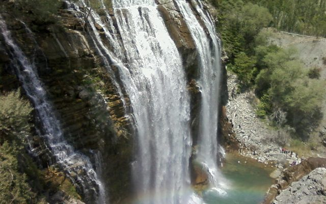
Tortum-WasserfallErzurum · Wasserfall Trabzon Atatürk-PavillonTrabzon · Museum
Trabzon Atatürk-PavillonTrabzon · Museum Trabzon Ayasofya-MoscheeTrabzon · Sakralbau
Trabzon Ayasofya-MoscheeTrabzon · Sakralbau Museum Trabzon (Kostaki-Konak)Trabzon · Museum
Museum Trabzon (Kostaki-Konak)Trabzon · Museum Antike Stadt TralleisAydın · Ausgrabungsstätte
Antike Stadt TralleisAydın · Ausgrabungsstätte Antike Stadt TrebennaAntalya · Ausgrabungsstätte
Antike Stadt TrebennaAntalya · Ausgrabungsstätte Museum TrojaÇanakkale · Museum
Museum TrojaÇanakkale · Museum Antike Stadt TrysaAntalya · Ausgrabungsstätte
Antike Stadt TrysaAntalya · Ausgrabungsstätte Museum TunceliTunceli · Museum
Museum TunceliTunceli · Museum Tuz-SeeAksaray · See
Tuz-SeeAksaray · See Antikes Tyana und römisches Becken (Kemerhisar)Niğde · Ausgrabungsstätte
Antikes Tyana und römisches Becken (Kemerhisar)Niğde · Ausgrabungsstätte Antike Stadt TyberissosAntalya · Ausgrabungsstätte
Antike Stadt TyberissosAntalya · Ausgrabungsstätte Museum Türk Hava KurumuAnkara · Museum
Museum Türk Hava KurumuAnkara · Museum Museum Türk Vakıf Hat Sanatlarıİstanbul · Museum
Museum Türk Vakıf Hat Sanatlarıİstanbul · Museum Türk ve İslam Eserleri Müzesiİstanbul · MuseumMuseum Türk İslam EserleriEdirne · Museum
Türk ve İslam Eserleri Müzesiİstanbul · MuseumMuseum Türk İslam EserleriEdirne · Museum Türk İslam Eserleri ve Etnografya MüzesiErzurum · Museum
Türk İslam Eserleri ve Etnografya MüzesiErzurum · Museum Museum Türkiye İş Bankasıİstanbul · Museum
Museum Türkiye İş Bankasıİstanbul · Museum Naturpark Ulubey-SchluchtUşak · SchluchtMuseum UluborluIsparta · Museum
Naturpark Ulubey-SchluchtUşak · SchluchtMuseum UluborluIsparta · Museum Museum Ulucanlar CezaeviAnkara · Museum
Museum Ulucanlar CezaeviAnkara · Museum Uludağ Kayak MerkeziBursa · Skigebiet
Uludağ Kayak MerkeziBursa · Skigebiet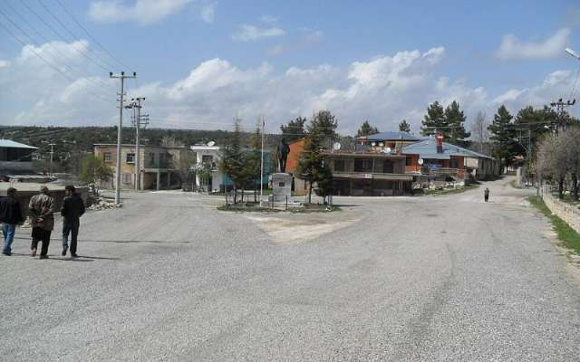
Ausgrabungsstätte UzuncaburçMersin · Ausgrabungsstätte UzungölTrabzon · See
UzungölTrabzon · See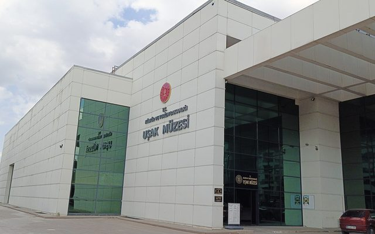
Museum UşakUşak · Museum Valla-SchluchtKastamonu · Schlucht
Valla-SchluchtKastamonu · Schlucht Van-SeeVan · See
Van-SeeVan · See Burg VanVan · Burg & historisches Bauwerk
Burg VanVan · Burg & historisches Bauwerk Museum VanVan · Museum
Museum VanVan · Museum Varda-BrückeAdana · Burg & historisches BauwerkVize Ayasofya (Gazi Süleyman Paşa)-MoscheeKırklareli · Sakralbau
Varda-BrückeAdana · Burg & historisches BauwerkVize Ayasofya (Gazi Süleyman Paşa)-MoscheeKırklareli · Sakralbau Vouni-PalastLefke · Ausgrabungsstätte
Vouni-PalastLefke · Ausgrabungsstätte Museum Yahya Kemalİstanbul · Museum
Museum Yahya Kemalİstanbul · Museum Museum YalvaçIsparta · Museum
Museum YalvaçIsparta · Museum Yanartaş (Khimaira)Antalya · Naturstätte
Yanartaş (Khimaira)Antalya · Naturstätte Ausgrabungsstätte YanıkhanMersin · Ausgrabungsstätte
Ausgrabungsstätte YanıkhanMersin · Ausgrabungsstätte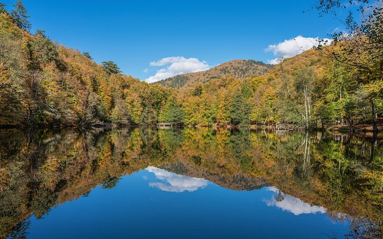
Nationalpark YedigöllerBolu · See Festung Yedikuleİstanbul · Burg & historisches Bauwerk
Festung Yedikuleİstanbul · Burg & historisches Bauwerk Yenişehir Şemaki Evi MüzesiBursa · Museum
Yenişehir Şemaki Evi MüzesiBursa · Museum Yerebatan-Zisterneİstanbul · Burg & historisches Bauwerk
Yerebatan-Zisterneİstanbul · Burg & historisches Bauwerk Ausgrabungsstätte YesemekGaziantep · Ausgrabungsstätte
Ausgrabungsstätte YesemekGaziantep · Ausgrabungsstätte Ausgrabungsstätte Yeşilhisar SoğanlıKayseri · Ausgrabungsstätte
Ausgrabungsstätte Yeşilhisar SoğanlıKayseri · Ausgrabungsstätte Siedlungshügel Yeşilovaİzmir · Ausgrabungsstätte
Siedlungshügel Yeşilovaİzmir · Ausgrabungsstätte Yivli Minare-MoscheeAntalya · Sakralbau
Yivli Minare-MoscheeAntalya · Sakralbau Museum YozgatYozgat · Museum
Museum YozgatYozgat · Museum Siedlungshügel YumuktepeMersin · Ausgrabungsstätte
Siedlungshügel YumuktepeMersin · Ausgrabungsstätte Yörük Ali Efe Evi MüzesiAydın · Museum
Yörük Ali Efe Evi MüzesiAydın · Museum Yörük KöyüKarabük · Burg & historisches Bauwerk
Yörük KöyüKarabük · Burg & historisches Bauwerk Wandernder Pavillon (Yürüyen Köşk)Yalova · Museum
Wandernder Pavillon (Yürüyen Köşk)Yalova · Museum YılankaleAdana · Burg & historisches Bauwerk
YılankaleAdana · Burg & historisches Bauwerk Yıldız Porselen Fabrikasıİstanbul · Museum
Yıldız Porselen Fabrikasıİstanbul · Museum Yıldız-Palastİstanbul · Burg & historisches Bauwerk
Yıldız-Palastİstanbul · Burg & historisches Bauwerk Museum Yılmaz Büyükerşen Balmumu HeykellerEskişehir · Museum
Museum Yılmaz Büyükerşen Balmumu HeykellerEskişehir · Museum Museum ZaferAfyonkarahisar · Museum
Museum ZaferAfyonkarahisar · Museum Zamantı IrmağıAdana · Rafting
Zamantı IrmağıAdana · Rafting Karawanserei ZazadinKonya · Burg & historisches Bauwerk
Karawanserei ZazadinKonya · Burg & historisches Bauwerk Museum Zeki Müren SanatMuğla · Museum
Museum Zeki Müren SanatMuğla · Museum Zengibar Kalesi (Isaura)Konya · Ausgrabungsstätte
Zengibar Kalesi (Isaura)Konya · Ausgrabungsstätte Burg ZerzevanDiyarbakır · Ausgrabungsstätte
Burg ZerzevanDiyarbakır · Ausgrabungsstätte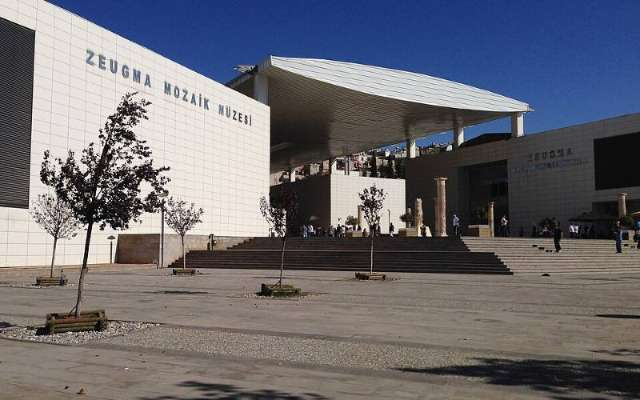
Mosaikmuseum ZeugmaGaziantep · Museum Ausgrabungsstätte ZeugmaGaziantep · Ausgrabungsstätte
Ausgrabungsstätte ZeugmaGaziantep · Ausgrabungsstätte ZilkaleRize · Burg & historisches Bauwerk
ZilkaleRize · Burg & historisches Bauwerk Medrese ZinciriyeDiyarbakır · Sakralbau
Medrese ZinciriyeDiyarbakır · Sakralbau Zincirli Höyük (Sam'al)Gaziantep · Ausgrabungsstätte
Zincirli Höyük (Sam'al)Gaziantep · Ausgrabungsstätte Museum Ziya GökalpDiyarbakır · Museum
Museum Ziya GökalpDiyarbakır · Museum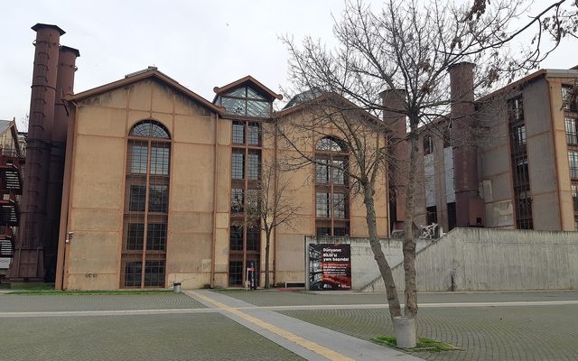
Museum santralistanbul Enerjiİstanbul · Museum Museum Çamlık Buharlı Lokomotifİzmir · Museum
Museum Çamlık Buharlı Lokomotifİzmir · Museum Museum Çanakkale DenizÇanakkale · MuseumÇanakkale Destanı Tanıtım MerkeziÇanakkale · MuseumÇanakkale Hilal-i Ahmer Canlandırma AlanıÇanakkale · Museum
Museum Çanakkale DenizÇanakkale · MuseumÇanakkale Destanı Tanıtım MerkeziÇanakkale · MuseumÇanakkale Hilal-i Ahmer Canlandırma AlanıÇanakkale · Museum Museum ÇankırıÇankırı · Museum
Museum ÇankırıÇankırı · Museum Museum Çatalca Mübadeleİstanbul · Museum
Museum Çatalca Mübadeleİstanbul · Museum Antike Siedlung ÇatıörenMersin · Ausgrabungsstätte
Antike Siedlung ÇatıörenMersin · Ausgrabungsstätte Burg ÇavuştepeVan · Burg & historisches Bauwerk
Burg ÇavuştepeVan · Burg & historisches Bauwerk Siedlungshügel ÇayönüDiyarbakır · Ausgrabungsstätte
Siedlungshügel ÇayönüDiyarbakır · Ausgrabungsstätte Museum Çağdaş Cam SanatlarıEskişehir · Museum
Museum Çağdaş Cam SanatlarıEskişehir · Museum Çemberlitaş Sütunu (Konstantin Forumu)İstanbul · Burg & historisches Bauwerk
Çemberlitaş Sütunu (Konstantin Forumu)İstanbul · Burg & historisches Bauwerk Museum Çengelhan Rahmi M. KoçAnkara · Museum
Museum Çengelhan Rahmi M. KoçAnkara · Museum Ausgrabungsstätte ÇevlikHatay · Ausgrabungsstätte
Ausgrabungsstätte ÇevlikHatay · Ausgrabungsstätte Museum Çeşmeİzmir · Museum
Museum Çeşmeİzmir · Museum Museum ÇiniKütahya · Museum
Museum ÇiniKütahya · Museum Çoruh NehriArtvin · Rafting
Çoruh NehriArtvin · Rafting Museum ÇorumÇorum · Museum
Museum ÇorumÇorum · Museum Çıldır-SeeArdahan · SeeMuseum Ödemişİzmir · Museum
Çıldır-SeeArdahan · SeeMuseum Ödemişİzmir · Museum Öküzini-HöhleAntalya · Ausgrabungsstätte
Öküzini-HöhleAntalya · Ausgrabungsstätte Ausgrabungsstätte ÖküzlüMersin · Ausgrabungsstätte
Ausgrabungsstätte ÖküzlüMersin · Ausgrabungsstätte Unterirdische Stadt ÖzkonakNevşehir · Unterirdische Stadt
Unterirdische Stadt ÖzkonakNevşehir · Unterirdische Stadt Museum ÜrgüpNevşehir · Museum
Museum ÜrgüpNevşehir · Museum Üç KümbetlerErzurum · Sakralbau
Üç KümbetlerErzurum · Sakralbau Üçayaklı Villa RustikaMersin · AusgrabungsstätteAntike Stadt İdyrosAntalya · Ausgrabungsstätte
Üçayaklı Villa RustikaMersin · AusgrabungsstätteAntike Stadt İdyrosAntalya · Ausgrabungsstätte İlhan Koman Heykel ve Resim MüzesiEdirne · Museum
İlhan Koman Heykel ve Resim MüzesiEdirne · Museum İlter Uzel Tıp ve Diş Hekimliği MüzesiAdana · Museum
İlter Uzel Tıp ve Diş Hekimliği MüzesiAdana · Museum Studioskloster (İmrahor-Moschee)İstanbul · SakralbauMuseum İnönü Savaşları KarargâhEskişehir · Museum
Studioskloster (İmrahor-Moschee)İstanbul · SakralbauMuseum İnönü Savaşları KarargâhEskişehir · Museum İshak Paşa-PalastAğrı · Burg & historisches Bauwerk
İshak Paşa-PalastAğrı · Burg & historisches Bauwerk Museum İskele İkonİskele · MuseumMuseum İskenderun DenizHatay · Museum
Museum İskele İkonİskele · MuseumMuseum İskenderun DenizHatay · Museum İslam Bilim ve Teknoloji Tarihi Müzesiİstanbul · Museum
İslam Bilim ve Teknoloji Tarihi Müzesiİstanbul · Museum İsmet İnönü Evi Müzesiİstanbul · Museum
İsmet İnönü Evi Müzesiİstanbul · Museum Archäologische Museen İstanbulİstanbul · Museum
Archäologische Museen İstanbulİstanbul · Museum Museum İstanbul Denizİstanbul · Museum
Museum İstanbul Denizİstanbul · Museum Galataturmİstanbul · Burg & historisches Bauwerk
Galataturmİstanbul · Burg & historisches Bauwerk Museum İstanbul Havacılıkİstanbul · MuseumMuseum İstanbul Havalimanıİstanbul · Museum
Museum İstanbul Havacılıkİstanbul · MuseumMuseum İstanbul Havalimanıİstanbul · Museum İstanbul Modernİstanbul · Museum
İstanbul Modernİstanbul · Museum Museum İstanbul Oyuncakİstanbul · Museum
Museum İstanbul Oyuncakİstanbul · Museum Archäologisches Museum İzmirİzmir · Museum
Archäologisches Museum İzmirİzmir · Museum Museum İzmir Atatürkİzmir · Museum
Museum İzmir Atatürkİzmir · Museum İzmir Kültür Sanat Fabrikasıİzmir · Museum
İzmir Kültür Sanat Fabrikasıİzmir · Museum Museum İzmir Resim Heykelİzmir · Museum
Museum İzmir Resim Heykelİzmir · Museum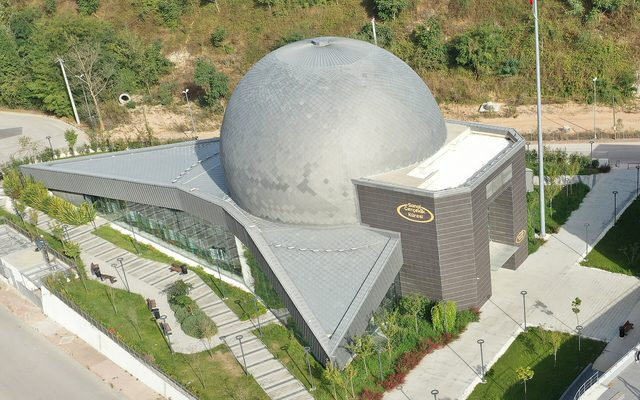
İzmit Deprem Anma ve Farkındalık MüzesiKocaeli · Museum Museum İznikBursa · Museum
Museum İznikBursa · Museum Museum İzzet Koyunoğlu ŞehirKonya · Museum
Museum İzzet Koyunoğlu ŞehirKonya · Museum Archäologisches Museum ŞanlıurfaŞanlıurfa · Museum
Archäologisches Museum ŞanlıurfaŞanlıurfa · Museum Burg ŞanlıurfaŞanlıurfa · Burg & historisches Bauwerk
Burg ŞanlıurfaŞanlıurfa · Burg & historisches Bauwerk ŞapinuvaÇorum · Ausgrabungsstätte
ŞapinuvaÇorum · Ausgrabungsstätte Antike Stadt Şar (Komana)Adana · Ausgrabungsstätte
Antike Stadt Şar (Komana)Adana · Ausgrabungsstätte Karawanserei ŞarapsaAntalya · Burg & historisches Bauwerk
Karawanserei ŞarapsaAntalya · Burg & historisches Bauwerk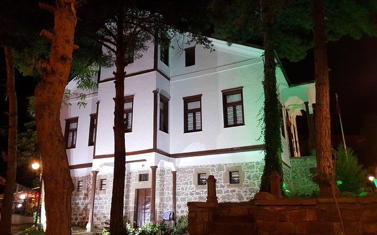
Atatürk-Haus-Museum ŞebinkarahisarGiresun · Museum Şehzade-Moscheeİstanbul · Sakralbau
Şehzade-Moscheeİstanbul · Sakralbau Şerefiye-Zisterneİstanbul · Burg & historisches Bauwerk
Şerefiye-Zisterneİstanbul · Burg & historisches Bauwerk Şirince Köyüİzmir · Burg & historisches BauwerkŞuayb-Stadt (Ruinenstätte)Şanlıurfa · Ausgrabungsstätte
Şirince Köyüİzmir · Burg & historisches BauwerkŞuayb-Stadt (Ruinenstätte)Şanlıurfa · Ausgrabungsstätte